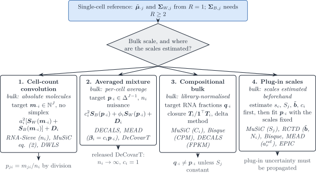
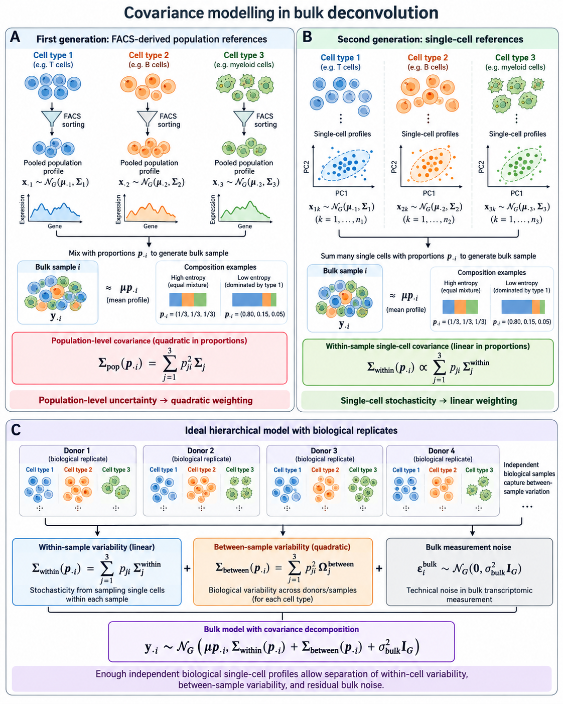
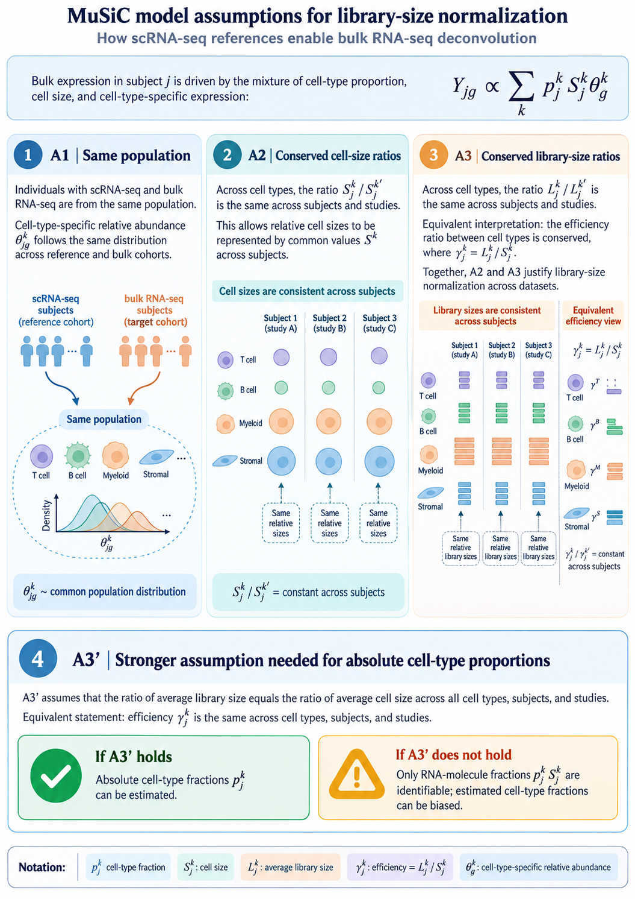
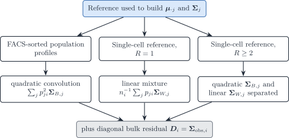
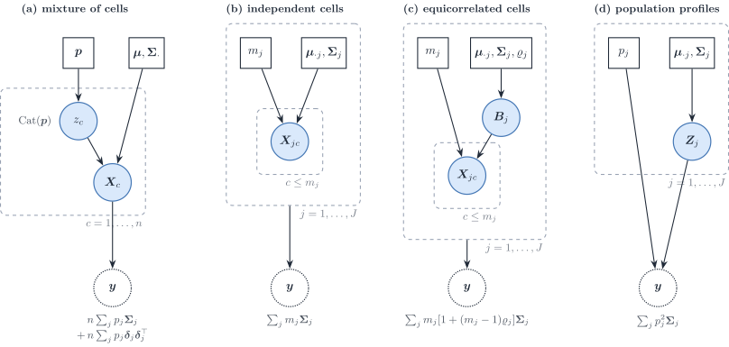
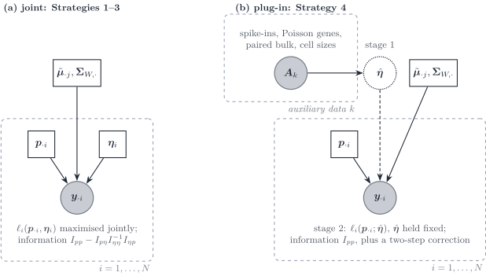

Single-cell DeCovarT: reference moments, alignment strategies and the profile fit
2026-10-30
Source:vignettes/theory-single-cell-generative-optimisation.qmd
Scope
Population-level DeCovarT fits the convolution \boldsymbol{y}_{\cdot i}\mid\boldsymbol{p}_{\cdot i} \sim\mathcal{N}_G(\boldsymbol{\mu}\boldsymbol{p}_{\cdot i}, \sum_j p_{ji}^{2}\boldsymbol{\Sigma}_j) of the population generative and optimisation vignette. That law is exact when each reference column is one random population profile, as for the FACS-sorted references it was designed for. A single-cell reference supplies a different object: many cells per type, counted by a UMI protocol, with a within-type cell-to-cell covariance, and a bulk sample that is a physical sum of cells measured on another platform.
This vignette rebuilds DeCovarT for that reference: the generative model and its optimisation. The measurement and expression models of UMI counts, and the published methods that use second-order moments, are reviewed in the distribution-aware deconvolution review; this vignette uses their conclusions.
- Sec. 1 builds the mean and the covariance layers of a reference from cells and replicates.
- Sec. 2 shows that mixture, convolution and correlated cells are three cases of one covariance identity.
- Sec. 3 gives one score, Hessian and Fisher information for any Gaussian whose mean and covariance depend on parameters.
- Sec. 4 derives four alignment strategies: cell counts, averaged mixture, compositional bulk, and plug-in scales estimated before the deconvolution.
- Sec. 5 converts RNA fractions into cell fractions after the fit, and Sec. 6 shows how the cell size enters the mean and the covariance.
- Sec. 7 compares the strategies, and Sec. 8 describes the fit that is implemented: the linear layer of Strategy 2, with both scales profiled out, maximised by trust-region Newton or by L-BFGS-B.
The intervals for that fit, with the technical scales concentrated out, are derived in the single-cell inference vignette. The final model for real data, written as a generalised linear model, is in the population inference vignette. The simplex charts of the population vignette apply unchanged to the proportion block of every formulation.
deconvolute_single_cell()implements the linear layer of Strategy 2; the other strategies and layers are specifications.
Note 1: Notation
Indices: gene g=1,\ldots,G; cell type j=1,\ldots,J (a second type is \ell); bulk sample i=1,\ldots,N; independent biological replicate (donor) of the single-cell reference r=1,\ldots,R; cell c, with C_{jr} cells of type j in replicate r and C_j in total.
Symbol Meaning x_{gc}, \boldsymbol{x}_{\cdot c} Observed UMI count of gene g in cell c \boldsymbol{m}_{\cdot c} True molecule content of cell c s_c=s^{\mathrm{bio}}_cs^{\mathrm{tech}}_c Cell size factor: biological (cell volume, cycle) times technical (capture, depth); \mathbb{E}[s_c]=1 \nu=\operatorname{CV}^{2}(s_c) Extrinsic noise, 1+\nu=(1+\nu^{\mathrm{bio}})(1+\nu^{\mathrm{tech}}) b_g Capture efficiency of gene g in one protocol \tilde b_g=b_g^{\mathrm{bulk}}/b_g^{\mathrm{ref}}, \tilde{\mathbf{B}}=\operatorname{diag}(\tilde{\boldsymbol{b}}) Gene-wise platform ratio between the bulk and the reference protocols \boldsymbol{\lambda}_{\cdot c}, \boldsymbol{\Sigma}^{\lambda}_j Size-free expression of cell c and its covariance inside type j \boldsymbol{y}_{\cdot i}\in\mathbb{R}^{G} Raw bulk profile of sample i m_{ji}\in\mathbb{N}, n_i=\sum_j m_{ji} Cells of type j in bulk sample i, total cells ( MuSiCwrites m_j^{k},RNA-Sieven)\tilde{\boldsymbol{y}}_{\cdot i}=\boldsymbol{y}_{\cdot i}/n_i Bulk profile per cell \boldsymbol{p}_{\cdot i}=\boldsymbol{m}_{\cdot i}/n_i\in\Delta^{J-1} Cell-number fractions \boldsymbol{q}_{\cdot i}, q_{ji}=p_{ji}S_j/\sum_\ell p_{\ell i}S_\ell RNA (transcript) fractions \tilde{\boldsymbol{\mu}}_{\cdot j}=C_j^{-1}\sum_{c\in j}\boldsymbol{x}_{\cdot c}=S_j\boldsymbol{\theta}_{\cdot j} Per-cell mean of type j on raw UMI counts, without library normalisation: cell size times relative abundance, \mathbf{1}^{\top}\boldsymbol{\theta}_{\cdot j}=1; \tilde{\boldsymbol{\mu}} is the G\times J matrix of these columns \boldsymbol{\mu}_{\cdot j} Mean of one sorted population profile, as in released DeCovarT S_j=\mathbf{1}^{\top}\tilde{\boldsymbol{\mu}}_{\cdot j} Mean transcriptome size (RNA content) of one cell of type j \boldsymbol{\Sigma}_{W,j} Within-replicate cell-to-cell covariance of type j \boldsymbol{\Sigma}_{B,j} Between-replicate covariance of the type-j population mean \boldsymbol{M}_{jr}, \boldsymbol{B}_{jr} Replicate population mean and its deviation \boldsymbol{M}_{jr}-\tilde{\boldsymbol{\mu}}_{\cdot j} a_i>0 Capture ratio between the bulk library and the reference cells (depth, capture), shared by all genes c_i=a_in_i, \phi_i=a_i^{2}n_i Mean scale and covariance scale of bulk sample i (Sec. 4.2.2) \boldsymbol{D}_i=\boldsymbol{\Sigma}_{\mathrm{obs},i} Diagonal bulk measurement noise, \operatorname{diag}(\tau_{1i}^{2},\ldots,\tau_{Gi}^{2}) \boldsymbol{T}_{ji}=\sum_{c=1}^{m_{ji}}\boldsymbol{X}_{jic} Total expression contributed by type j to sample i \boldsymbol{S}_W(\boldsymbol{v})=\sum_jv_j\boldsymbol{\Sigma}_{W,j}, \boldsymbol{S}_B(\boldsymbol{v})=\sum_jv_j^{2}\boldsymbol{\Sigma}_{B,j} Linear and quadratic covariance mixtures \varrho_j Cell-to-cell correlation inside type j; \boldsymbol{\rho} stays the ILR coordinate \boldsymbol{\vartheta}, \boldsymbol{\eta} Generic parameter vector; nuisance scales of Sec. 4.4 \boldsymbol{\mu}_k,\boldsymbol{\Sigma}_k,\boldsymbol{\mu}_{kl},\boldsymbol{\Sigma}_{kl} First and second partial derivatives of the mean and covariance in \vartheta_k,\vartheta_l A tilde marks a quantity rescaled to a reference unit: per cell for expression (\tilde{\boldsymbol{y}}_{\cdot i}, \tilde{\boldsymbol{\mu}}_{\cdot j}), or relative to the reference protocol for capture (\tilde{\boldsymbol{b}}). The capture efficiency b_g of one protocol multiplies every cell measured with it, so it cancels from any contrast inside that protocol; between a single-cell reference and a bulk library only the ratio \tilde b_g survives. That ratio is the gene-wise platform effect:
RCTDestimates it on a pseudo-bulk of all spots as e^{\hat\gamma_g}, with \hat\gamma_g=\log\bar Y_g-\log\sum_j\mu_{gj}\hat W_j for the pooled count \bar Y_g and average type weights \hat W_j, then renormalises the reference means to \bar\mu_{gj}=\mu_{gj}e^{\hat\gamma_g} (Cable et al. 2022). The ratio \lambda_g ofMEADand the gene-wise slope ofBisqueare the same nuisance.When one bulk sample is fixed, the index i is dropped inside derivations and restored in the model statements. The single-cell papers use j for the gene (Sarkar and Stephens; Fang and Pachter;
DECALS;Bisque) or for the subject (MuSiC); the notation map of the review translates every reviewed method.All plate diagrams follow one symbol key: white squares are fixed quantities, blue circles latent random variables, grey circles observed variables, dotted circles deterministic functions of their parents. Text beside a node is an equation, not a variable. When a paper builds increasingly complex models, its panels run from left to right.

Figure 1: Four strategies to align a single-cell reference with a bulk sample. Strategies 1–3 differ by the scale on which the bulk is observed and estimate the scales jointly with the composition; Strategy 4 estimates the technical and biological scales first and plugs them into the regression or likelihood. Italic lines name the reviewed methods that already sit on each branch.
From cells to reference moments
The signature that enters the released convolution is a population profile: one mean vector and one covariance per cell type. Single-cell counts are not that object. This section states how to build the mean and how the covariance splits, then how to place the resulting profiles on the same scale as bulk sample i.


Figure 2 is the target decomposition. Panel A is a purified population profile (quadratic in p_{ji}). Panel B is one single-cell reference (linear in p_{ji}). Panel C is the hierarchical model once R independent replicates exist.
Mean: average cells, then average replicates
For a fixed type j, the per-cell mean does not depend on how many cells were captured. With raw counts on an additive scale,
\bar{\boldsymbol{X}}_{jr} = \frac{1}{C_{jr}}\sum_{c=1}^{C_{jr}}\boldsymbol{X}_{jrc}, \qquad \hat{\tilde{\boldsymbol{\mu}}}_{\cdot j} = \frac{1}{R}\sum_{r=1}^{R}\bar{\boldsymbol{X}}_{jr}. \tag{1}
Divide by the cell count C_{jr}, not by the library size. Library-size weights w_c=L_c/\sum_d L_d are functions of \boldsymbol{X}_c itself. Their probability limit is \tilde{\boldsymbol{\mu}}_{\cdot j}+\boldsymbol{\Sigma}_{W,j}\mathbf{1}/S_j, so they target an RNA-weighted cell and destroy the exact Gaussian scale that leaves the precision graph unchanged. Under i.i.d. cells the arithmetic mean also has the largest effective sample size among deterministic convex weights.
Pool cells across replicates only after the within-replicate mean. A replicate with 10\,000 cells must not outweigh a replicate with 500 cells. MuSiC is built on that multi-subject split: cross-subject means and variances, with genes weighted by cross-subject and cross-cell consistency (Wang et al. 2019).
When every cell is scaled to a common total, the product S_j\boldsymbol{\theta}_{\cdot j} collapses to the arithmetic mean of the raw counts. MuSiC writes the signature as cell size times relative abundance and then recovers that same per-cell mean. Keep S_j and \boldsymbol{\theta}_{\cdot j} as separate factors (Sec. 1.3). Do not library-weight the raw vectors and call the result S_j.
Warning 2: Summing cells is the wrong signature, and the right pseudobulk
Summing is the correct total for a physical pool of exactly C_{jr} cells, \boldsymbol{T}_{jr}=\sum_c\boldsymbol{X}_{jrc}, with mean C_{jr}\tilde{\boldsymbol{\mu}}_{\cdot j} and covariance C_{jr}\boldsymbol{\Sigma}_{W,j}. Using \boldsymbol{T}_{jr} as a DeCovarT column inserts the arbitrary capture count into \boldsymbol{p}. A type with ten times more reference cells looks ten times more abundant.
The same sum is the right input for a different question. Differential expression of one cell type across donors needs one count vector per donor, then a bulk count model such as
DESeq2(Love et al. 2014). There the estimand is a relative fold change of averaged counts, and the donor is the independent unit. Cells from one donor are subsamples. Treating them as replicates inflates false discoveries (Squair et al. 2021). That analysis does not estimate \boldsymbol{p}_{\cdot i}.
Three reference regimes
Write the cell as a sum of a replicate effect and a cell effect,
\boldsymbol{X}_{jrc} = \tilde{\boldsymbol{\mu}}_{\cdot j}+\boldsymbol{B}_{jr}+\boldsymbol{\varepsilon}_{jrc}, \tag{2}
with \boldsymbol{B}_{jr}\sim\mathcal{N}(\boldsymbol{0},\boldsymbol{\Sigma}_{B,j}) and \boldsymbol{\varepsilon}_{jrc}\sim\mathcal{N}(\boldsymbol{0},\boldsymbol{\Sigma}_{W,j}), independent across j given \boldsymbol{p}_{\cdot i}. The bulk profile per cell of a tissue of n_i cells is
\tilde{\boldsymbol{y}}_{\cdot i} = \sum_j p_{ji}(\tilde{\boldsymbol{\mu}}_{\cdot j}+\boldsymbol{B}_{jr(i)}) + \frac{1}{n_i}\sum_j\sum_{c=1}^{m_{ji}}\boldsymbol{\varepsilon}_{jic}. \tag{3}
FACS-sorted population profiles
Historically the reference was one bulk profile per purified population: surface-marker sorting, then a pooled microarray or RNA-seq library. The random object is the whole population vector \boldsymbol{Z}_{ij}\sim\mathcal{N}(\boldsymbol{\mu}_{\cdot j},\boldsymbol{\Sigma}_{B,j}), and the bulk is the convolution
\boldsymbol{y}_{\cdot i} = \sum_j p_{ji}\boldsymbol{Z}_{ij}, \qquad \operatorname{Cov}(\boldsymbol{y}_{\cdot i}\mid\boldsymbol{p}_{\cdot i}) = \sum_j p_{ji}^{2}\,\boldsymbol{\Sigma}_{B,j}. \tag{4}
The square appears because one random profile is multiplied by p_{ji}, not because p_{ji} cells were added. This is the covariance in the released convolution. If several types are sorted from the same donors, cross-type blocks \boldsymbol{\Sigma}_{B,j\ell} add terms p_{ji}p_{\ell i}. Before droplet scRNA-seq, such population profiles came from FACS- or MACS-purified bulk libraries, already with coexpression among the genes of a purified type (Szaniszlo et al. 2004; Novershtern et al. 2011).
One single-cell replicate (R=1)
R=1 identifies \boldsymbol{M}_{j1} and \boldsymbol{\Sigma}_{W,j}. It does not identify \boldsymbol{\Sigma}_{B,j}: extra cells shrink \boldsymbol{\Sigma}_{W,j}/C_{j1} and leave the single draw \boldsymbol{B}_{j1} untouched. The coherent bulk covariance is the mixture / physical sum, linear in p_{ji}:
\operatorname{Cov}(\tilde{\boldsymbol{y}}_{\cdot i}\mid\boldsymbol{p}_{\cdot i}) = \frac{1}{n_i}\sum_j p_{ji}\,\boldsymbol{\Sigma}_{W,j} + \boldsymbol{\Sigma}_{\mathrm{obs},i}. \tag{5}
Here n_i is the number of cells behind the bulk library, in practice an effective number (Sec. 4.2.2). The number of reference cells C_{j1} is not n_i. A finite-cell reference mean adds a separate quadratic term \sum_j p_{ji}^{2}\boldsymbol{\Sigma}_{W,j}/C_{j1}. That term is Monte Carlo error of \hat{\tilde{\boldsymbol{\mu}}}_{\cdot j}, not biological between-donor covariance. Do not drop \boldsymbol{\Sigma}_{W,j} into the p_{ji}^{2} slot of the released convolution.
For a rare type, p_{ji}=0.01 makes p_{ji}^{2} a hundred times smaller than p_{ji}. A within-cell covariance placed in the quadratic slot is almost silenced.
Enough biological replicates
The smallest R that identifies a variance component is R\ge 2. The replicate means satisfy
\bar{\boldsymbol{X}}_{jr} \sim \mathcal{N}\!\left( \boldsymbol{\mu}_{\cdot j},\; \boldsymbol{\Sigma}_{B,j}+\frac{\boldsymbol{\Sigma}_{W,j}}{C_{jr}} \right). \tag{6}
A method-of-moments contrast is then available. Let \boldsymbol{S}_{B,j} be the sample covariance of \{\bar{\boldsymbol{X}}_{jr}\}_{r=1}^{R} and \bar{C}_j a typical cell count. Then
\mathbb{E}[\boldsymbol{S}_{B,j}] = \boldsymbol{\Sigma}_{B,j} + \overline{\boldsymbol{\Sigma}_{W,j}/C_{jr}}, \tag{7}
so \hat{\boldsymbol{\Sigma}}_{B,j}=\boldsymbol{S}_{B,j}-\widehat{\boldsymbol{\Sigma}}_{W,j}/\bar{C}_j, projected onto the positive semidefinite cone. An unstructured G\times G covariance has G(G+1)/2 free entries. Transcriptome-scale G makes that matrix unestimable for the R of a normal single-cell study. What R\ge 2 buys is the scalar separation of the two layers, or a sparse precision for \boldsymbol{\Sigma}_{B,j}, not a dense G\times G matrix. Reference cohorts in current single-cell deconvolution are small; MEAD states this explicitly (Xie et al. 2026). Cells from one donor share genetic and environmental background, so they are subsamples rather than independent biological units. Zimmerman, Espeland and Langefeld document that dependence across cell types, and they treat donor as the random effect when contrasting conditions (Zimmerman et al. 2021). That within-versus-between split is the same hierarchy as \boldsymbol{\Sigma}_{W,j} versus \boldsymbol{\Sigma}_{B,j} when a single-cell reference is aligned with bulk.
With that split, the bulk law per cell is
\tilde{\boldsymbol{y}}_{\cdot i}\mid\boldsymbol{p}_{\cdot i} \sim \mathcal{N}\!\Big( \sum_j p_{ji}\tilde{\boldsymbol{\mu}}_{\cdot j},\; \sum_j p_{ji}^{2}\,\boldsymbol{\Sigma}_{B,j} + \frac{1}{n_i}\sum_j p_{ji}\,\boldsymbol{\Sigma}_{W,j} + \boldsymbol{\Sigma}_{\mathrm{obs},i} \Big). \tag{8}
Sec. 4.2 puts it back on the scale of the bulk library.
\boldsymbol{\Sigma}_{\mathrm{obs},i} is diagonal. Gene–gene correlation is already inside \boldsymbol{\Sigma}_{B,j} and \boldsymbol{\Sigma}_{W,j}. Heteroscedastic diagonal entries are allowed. Off-diagonal residual correlation would double-count the network.

Figure 4: Which covariance terms the reference design identifies. FACS profiles supply only the quadratic layer. One single-cell replicate supplies only the linear layer. R\ge 2 replicates separate both, plus a diagonal bulk residual.
Aligning reference profiles with bulk sample i
Eq. 1 is a per-cell mean. Bulk sample i is a library. Three scales sit between them. Only two belong inside the estimator.
Sample scales a_i and n_i. On the raw molecule scale, \boldsymbol{y}_{\cdot i}=a_in_i\tilde{\boldsymbol{\mu}}\boldsymbol{p}_{\cdot i} plus noise: n_i is the number of cells and a_i the capture ratio between the bulk library and the reference cells (depth and capture), one positive number per bulk sample shared by all genes. The mean identifies only c_i=a_in_i; Sec. 4.2.2 shows that the covariance identifies the second scalar. Neither is a composition parameter.
Cell size S_j. RNA content differs by cell type, \tilde{\boldsymbol{\mu}}_{\cdot j}=S_j\boldsymbol{\theta}_{\cdot j}, so
\boldsymbol{y}_{\cdot i} = a_in_i\sum_j p_{ji} S_j\boldsymbol{\theta}_{\cdot j} + \boldsymbol{\varepsilon}_i. \tag{9}
MuSiC states the same product: cell fraction, average cell size, relative abundance (Wang et al. 2019). If S_j is measured, insert it. Do not re-estimate it. Free S_j and \boldsymbol{p}_{\cdot i} are not separately identifiable from \boldsymbol{y}_{\cdot i} alone, because only the products p_{ji}S_j enter Eq. 9. The RNA fraction
q_{ji} = \frac{p_{ji}S_j}{\sum_\ell p_{\ell i}S_\ell} \tag{10}
is what a normalised bulk identifies. \boldsymbol{q}_{\cdot i}=\boldsymbol{p}_{\cdot i} when S_j is constant across j. That constant-efficiency hypothesis is assumption A3' of MuSiC: the ratio of average library size equals the ratio of average cell size, equivalently a common capture efficiency \gamma_j=L_j/S_j (Figure 3). Under A3', the per-cell mean of raw counts \tilde{\boldsymbol{\mu}}_{\cdot j} carries the true size ratios and the fitted weights are cytometry fractions \boldsymbol{p}_{\cdot i}. A library-normalised signature \boldsymbol{\theta}_{\cdot j} returns RNA fractions \boldsymbol{q}_{\cdot i} instead; and if A3' fails, the UMI totals S_j mix cell size with type-specific capture. Both cases need the RNA-to-cell correction of Sec. 5, which also compares EPIC, quanTIseq, MMAD and ReDeconv.
Gene-wise platform ratio \tilde{\boldsymbol{b}}. A platform shift can be gene-specific, y_{gi}\approx\tilde b_g a_in_i\sum_j p_{ji}\tilde\mu_{gj}. Bisque learns such a map from paired bulk and single-cell measurements (Jew et al. 2020), RCTD from a pseudo-bulk of all spots (Note 1). Fitting \tilde{\boldsymbol{b}} on the bulk sample that is being deconvolved lets the scale absorb any residual, and \boldsymbol{p}_{\cdot i} is then unidentified. Estimate \tilde{\boldsymbol{b}} on an external paired cohort or a pool of many samples, or do not estimate it.
Normalisation that preserves the linear mixture
The moment identities above are for raw counts on an additive scale. They do not survive a logarithm: \log\boldsymbol{y}_{\cdot i} is not \sum_j p_{ji}\log\boldsymbol{\mu}_{\cdot j}.
The comparison DeCovarT needs is the same gene on two technologies, not two genes inside one sample. Gene length is a property of the assay. It cancels for a within-gene contrast and should not be divided out of the reference unless the bulk was length-normalised in the same way. ReDeconv treats length as a bulk-only TPM/RPKM correction and leaves UMI single-cell counts uncorrected for length (Lu et al. 2025).
| Procedure | What it estimates | Use for \tilde{\boldsymbol{\mu}}_{\cdot j} |
|---|---|---|
| Arithmetic mean of raw counts | Per-cell mean | Default signature |
| CPM / CP10K | Library-size relative profile | Erases S_j |
| TPM / RPKM / FPKM | Length-adjusted composition | Breaks cross-platform per-gene alignment |
TMM (edgeR) or median-of-ratios (DESeq2) |
Effective library size for differential expression | Donor-level DE, not the signature (Robinson et al. 2010; Love et al. 2014) |
SCTransform |
Regularised negative-binomial residuals | Clustering and integration, not an additive mixture mean (Hafemeister and Satija 2019) |
CLTS (ReDeconv) |
Counts rescaled by a linearised transcriptome size | Keeps S_j for deconvolution (Lu et al. 2025) |
CPM and CP10K divide by the cell total. That is a relative profile \boldsymbol{\theta}_{\cdot j} with S_j discarded. TMM and the DESeq2 size factor answer a different question: an effective depth for between-sample differential expression, under a hypothesis that most genes are stable (Robinson et al. 2010; Love et al. 2014). SCTransform models depth inside a negative binomial; the residuals are not an additive convolution mean (Hafemeister and Satija 2019).
Convolution, mixture and correlated cells
Let \boldsymbol{X}\sim\mathcal{N}_G(\boldsymbol{\mu},\boldsymbol{\Sigma}). Two statements look contradictory,
\operatorname{Cov}(a\boldsymbol{X})=a^{2}\boldsymbol{\Sigma} \qquad\text{versus}\qquad \operatorname{Cov}\Bigl(\sum_{r=1}^{a}\boldsymbol{X}_r\Bigr)=a\boldsymbol{\Sigma}, \tag{11}
and both are correct. The difference lies entirely in the dependence between the a summands, not in two rules for Gaussian vectors.
Characteristic-function proof
The characteristic function of \boldsymbol{X} is \phi_{\boldsymbol{X}}(\boldsymbol{t}) =\exp(i\boldsymbol{t}^{\top}\boldsymbol{\mu} -\tfrac12\boldsymbol{t}^{\top}\boldsymbol{\Sigma}\boldsymbol{t}).
Scaling substitutes a\boldsymbol{t} for \boldsymbol{t}:
\phi_{a\boldsymbol{X}}(\boldsymbol{t}) =\phi_{\boldsymbol{X}}(a\boldsymbol{t}) =\exp\bigl(i\boldsymbol{t}^{\top}(a\boldsymbol{\mu}) -\tfrac12\boldsymbol{t}^{\top}(a^{2}\boldsymbol{\Sigma})\boldsymbol{t}\bigr), \qquad a\boldsymbol{X}\sim\mathcal{N}_G(a\boldsymbol{\mu},a^{2}\boldsymbol{\Sigma}). \tag{12}
Independent convolution multiplies a identical factors:
\phi_{\boldsymbol{X}_1+\cdots+\boldsymbol{X}_a}(\boldsymbol{t}) =\phi_{\boldsymbol{X}}(\boldsymbol{t})^{a} =\exp\bigl(i\boldsymbol{t}^{\top}(a\boldsymbol{\mu}) -\tfrac12\boldsymbol{t}^{\top}(a\boldsymbol{\Sigma})\boldsymbol{t}\bigr), \qquad \sum_{r}\boldsymbol{X}_r\sim\mathcal{N}_G(a\boldsymbol{\mu},a\boldsymbol{\Sigma}). \tag{13}
The first route squares the quadratic exponent; the second adds a copies of it. The density convolution (f*f)(\boldsymbol{s})=\int f(\boldsymbol{x})f(\boldsymbol{s}-\boldsymbol{x})\,d\boldsymbol{x} is the law of \boldsymbol{X}_1+\boldsymbol{X}_2 only when the two draws are independent. Saying “a convolution of Gaussians” therefore already asserts independent summands.
The master identity and its two endpoints
For arbitrary random vectors with \operatorname{Cov}(\boldsymbol{X}_r)=\boldsymbol{\Sigma} and cross-covariances \boldsymbol{C}_{rs}=\operatorname{Cov}(\boldsymbol{X}_r,\boldsymbol{X}_s),
\operatorname{Cov}\Bigl(\sum_{r=1}^{a}\boldsymbol{X}_r\Bigr) =\sum_{r,s}\operatorname{Cov}(\boldsymbol{X}_r,\boldsymbol{X}_s) =a\boldsymbol{\Sigma}+\sum_{r\neq s}\boldsymbol{C}_{rs}. \tag{14}
Under equicorrelation, \boldsymbol{C}_{rs}=\varrho\boldsymbol{\Sigma} for r\neq s, the a(a-1) off-diagonal blocks collapse to
\operatorname{Cov}\Bigl(\sum_{r=1}^{a}\boldsymbol{X}_r\Bigr) =a\bigl[1+(a-1)\varrho\bigr]\boldsymbol{\Sigma}, \qquad -\frac{1}{a-1}\le\varrho\le 1 . \tag{15}
Setting \varrho=1 (the same realised vector reused a times) gives a^{2}\boldsymbol{\Sigma}; setting \varrho=0 (fresh independent draws) gives a\boldsymbol{\Sigma}. Table 1 lists the cases. A sum of merely marginally Gaussian vectors need not be Gaussian; Eq. 15 is a Gaussian law only when the stacked vector (\boldsymbol{X}_1^{\top},\ldots,\boldsymbol{X}_a^{\top})^{\top} is jointly Gaussian, which is the assumption made whenever an intermediate \varrho is used below.
| Construction | Dependence | Mean | Covariance | Law |
|---|---|---|---|---|
| Same \boldsymbol{X} repeated | \varrho=1 | a\boldsymbol{\mu} | a^{2}\boldsymbol{\Sigma} | \mathcal{N}_G |
| a i.i.d. copies | \varrho=0 | a\boldsymbol{\mu} | a\boldsymbol{\Sigma} | \mathcal{N}_G |
| Correlated copies | general \boldsymbol{C}_{rs} | a\boldsymbol{\mu} | a\boldsymbol{\Sigma}+\sum_{r\neq s}\boldsymbol{C}_{rs} | Gaussian if jointly Gaussian |
| Equicorrelated copies | \boldsymbol{C}_{rs}=\varrho\boldsymbol{\Sigma} | a\boldsymbol{\mu} | a[1+(a-1)\varrho]\boldsymbol{\Sigma} | Gaussian if jointly Gaussian |
The biological reading is the one that matters for a single-cell reference. If \boldsymbol{\Sigma}_j is the covariance between cells of type j, summing m_j independent cells yields m_j\boldsymbol{\Sigma}_j. If \boldsymbol{\Sigma}_j is the covariance of one latent type-level profile that is multiplied by a weight, the contribution is p_j^{2}\boldsymbol{\Sigma}_j. Released DeCovarT is the second case. The random-effects decomposition of Sec. 1.2,
\boldsymbol{X}_{jc}=\boldsymbol{M}_j+\boldsymbol{\varepsilon}_{jc}, \qquad \operatorname{Cov}\Bigl(\sum_{c=1}^{m_j}\boldsymbol{X}_{jc}\Bigr) =m_j\boldsymbol{\Sigma}_{W,j}+m_j^{2}\boldsymbol{\Sigma}_{B,j}, \tag{16}
contains both endpoints at once: independent cell fluctuations accumulate linearly, a shared type-level fluctuation is amplified quadratically. Equicorrelated cells are the special case \boldsymbol{\Sigma}_{B,j}=\varrho_j\boldsymbol{\Sigma}_j and \boldsymbol{\Sigma}_{W,j}=(1-\varrho_j)\boldsymbol{\Sigma}_j (Sec. 2.4).
Mixture of cells versus convolution of populations
The identity Eq. 14 fixes the covariance once the dependence between summands is fixed. Deconvolution models differ by a second choice: whether the cell type of each summand is random or given. Figure 5 lays out the four cases from no dependence to full dependence.

Figure 5: Four generative stories for a bulk profile \boldsymbol{y}, ordered by the dependence between cells. (a) A mixture: each of n cells draws its type label from \mathrm{Cat}(\boldsymbol{p}). (b) Independent cells with fixed counts m_j. (c) Equicorrelated cells sharing a type-level effect \boldsymbol{B}_j. (d) One population profile per type, scaled by p_j. The note under each \boldsymbol{y} is its covariance; \boldsymbol{\delta}_j=\boldsymbol{\mu}_{\cdot j}-\boldsymbol{\mu}\boldsymbol{p}.
Mixture of cells. If the type label z_c of each of n cells is drawn from \mathrm{Cat}(\boldsymbol{p}), one cell follows the Gaussian mixture \sum_jp_j\mathcal{N}_G(\boldsymbol{\mu}_{\cdot j},\boldsymbol{\Sigma}_j), with
\mathbb{E}[\boldsymbol{X}_c]=\boldsymbol{\mu}\boldsymbol{p}, \qquad \operatorname{Cov}(\boldsymbol{X}_c) =\sum_jp_j\boldsymbol{\Sigma}_j +\sum_jp_j(\boldsymbol{\mu}_{\cdot j}-\boldsymbol{\mu}\boldsymbol{p})(\boldsymbol{\mu}_{\cdot j}-\boldsymbol{\mu}\boldsymbol{p})^{\top} \tag{17}
by the law of total covariance. The sum of n independent such cells has n times that covariance and is Gaussian only in the central-limit sense. This is the RNA-Sieve likelihood, written gene by gene (RNA-Sieve). The second term is the spread of the type means; it is present because the labels are random, and it disappears once the counts \boldsymbol{m} are conditioned on.
Convolution of independent cells. With the counts given, the sum is an exact Gaussian with covariance \sum_jm_j\boldsymbol{\Sigma}_j: linear weights. This is Strategy 1 (Sec. 4.1) and, after division by n, the linear layer of Strategy 2.
Convolution of population profiles. If each type contributes one random profile scaled by its weight, the covariance is \sum_jp_j^{2}\boldsymbol{\Sigma}_j: quadratic weights. This is released DeCovarT, the DECALS covariance, and the cross-subject layer of MuSiC.
The equicorrelated model sits between the last two.
Correlated cells inside a type
Sec. 4.1 assumed independent cells within a type. Cells of one type in one tissue share micro-environment, cell cycle phase and paracrine signals, so a positive within-type correlation is plausible. The jointly Gaussian equicorrelated model of Eq. 15 with a type-specific \varrho_j gives
\operatorname{Cov}(\boldsymbol{T}_{ji}) =m_{ji}\bigl[1+(m_{ji}-1)\varrho_j\bigr]\boldsymbol{\Sigma}_{W,j} =m_{ji}(1-\varrho_j)\boldsymbol{\Sigma}_{W,j}+m_{ji}^{2}\varrho_j\boldsymbol{\Sigma}_{W,j}. \tag{18}
The second form shows that equicorrelation is the random-effects model Eq. 16 with proportional layers, \boldsymbol{\Sigma}_{B,j}=\varrho_j\boldsymbol{\Sigma}_{W,j} and a within covariance deflated to (1-\varrho_j)\boldsymbol{\Sigma}_{W,j}. The covariance derivative in \varrho_j is \boldsymbol{\Sigma}_{\varrho_j}=m_{ji}(m_{ji}-1)\boldsymbol{\Sigma}_{W,j}, so Theorem 1 applies. Identifiability is the obstacle: with one bulk sample, \varrho_j and m_{ji} enter only through the scalar m_{ji}[1+(m_{ji}-1)\varrho_j] in front of \boldsymbol{\Sigma}_{W,j} and cannot be separated. Several samples with different compositions, or an external estimate of \varrho_j from spatial neighbourhoods of the same type, are needed. The lower bound \varrho_j\ge-1/(m_{ji}-1) is the positive-semidefiniteness constraint and shrinks to zero for abundant types, so negative within-type correlation is a rare-type phenomenon only. The claim that a sum of equicorrelated cells is Gaussian rests on joint Gaussianity of the stacked cells, which is an assumption and not a consequence of Gaussian marginals.
One score and Hessian for every formulation
All models below are Gaussian with a parametrised mean and covariance. Write \boldsymbol{y}\mid\boldsymbol{\vartheta}\sim \mathcal{N}_G\bigl(\boldsymbol{\mu}(\boldsymbol{\vartheta}), \boldsymbol{\Sigma}(\boldsymbol{\vartheta})\bigr), \boldsymbol{r}=\boldsymbol{y}-\boldsymbol{\mu}(\boldsymbol{\vartheta}), \boldsymbol{\Omega}=\boldsymbol{\Sigma}^{-1}, and up to a constant
\ell(\boldsymbol{\vartheta}) =\tfrac12\log\det\boldsymbol{\Omega}(\boldsymbol{\vartheta}) -\tfrac12\boldsymbol{r}^{\top}\boldsymbol{\Omega}(\boldsymbol{\vartheta})\boldsymbol{r}. \tag{19}
The identities of the population generative vignette (matrix calculus) give the following.
Theorem 1 (Score, Hessian and expected information of a parametrised Gaussian) With \boldsymbol{\mu}_k=\partial\boldsymbol{\mu}/\partial\vartheta_k, \boldsymbol{\Sigma}_k=\partial\boldsymbol{\Sigma}/\partial\vartheta_k, \boldsymbol{\mu}_{kl}=\partial^{2}\boldsymbol{\mu}/\partial\vartheta_k\partial\vartheta_l and \boldsymbol{\Sigma}_{kl}=\partial^{2}\boldsymbol{\Sigma}/\partial\vartheta_k\partial\vartheta_l,
\frac{\partial\ell}{\partial\vartheta_k} =\underbrace{-\tfrac12\,\mathrm{tr}(\boldsymbol{\Omega}\boldsymbol{\Sigma}_k)}_{\text{determinant}} +\underbrace{\boldsymbol{\mu}_k^{\top}\boldsymbol{\Omega}\boldsymbol{r}}_{\text{mean residual}} +\underbrace{\tfrac12\,\boldsymbol{r}^{\top}\boldsymbol{\Omega}\boldsymbol{\Sigma}_k\boldsymbol{\Omega}\boldsymbol{r}}_{\text{covariance quadratic}}, \tag{20}
\begin{aligned} \frac{\partial^{2}\ell}{\partial\vartheta_k\partial\vartheta_l} &=\tfrac12\,\mathrm{tr}(\boldsymbol{\Omega}\boldsymbol{\Sigma}_k\boldsymbol{\Omega}\boldsymbol{\Sigma}_l) -\tfrac12\,\mathrm{tr}(\boldsymbol{\Omega}\boldsymbol{\Sigma}_{kl}) -\boldsymbol{\mu}_k^{\top}\boldsymbol{\Omega}\boldsymbol{\mu}_l +\boldsymbol{\mu}_{kl}^{\top}\boldsymbol{\Omega}\boldsymbol{r} \\ &\quad -\boldsymbol{\mu}_k^{\top}\boldsymbol{\Omega}\boldsymbol{\Sigma}_l\boldsymbol{\Omega}\boldsymbol{r} -\boldsymbol{\mu}_l^{\top}\boldsymbol{\Omega}\boldsymbol{\Sigma}_k\boldsymbol{\Omega}\boldsymbol{r} +\tfrac12\,\boldsymbol{r}^{\top}\boldsymbol{\Omega}\boldsymbol{\Sigma}_{kl}\boldsymbol{\Omega}\boldsymbol{r} -\boldsymbol{r}^{\top}\boldsymbol{\Omega}\boldsymbol{\Sigma}_k\boldsymbol{\Omega}\boldsymbol{\Sigma}_l\boldsymbol{\Omega}\boldsymbol{r}, \end{aligned} \tag{21}
I(\boldsymbol{\vartheta})_{kl} =\mathbb{E}\Bigl[-\frac{\partial^{2}\ell}{\partial\vartheta_k\partial\vartheta_l}\Bigr] =\boldsymbol{\mu}_k^{\top}\boldsymbol{\Omega}\boldsymbol{\mu}_l +\tfrac12\,\mathrm{tr}(\boldsymbol{\Omega}\boldsymbol{\Sigma}_k\boldsymbol{\Omega}\boldsymbol{\Sigma}_l). \tag{22}
Proof. The determinant term follows from \partial\log\det\boldsymbol{\Omega}/\partial\vartheta_k =-\mathrm{tr}(\boldsymbol{\Omega}\boldsymbol{\Sigma}_k) and \partial\boldsymbol{\Omega}/\partial\vartheta_k =-\boldsymbol{\Omega}\boldsymbol{\Sigma}_k\boldsymbol{\Omega}. Differentiating -\tfrac12\boldsymbol{r}^{\top}\boldsymbol{\Omega}\boldsymbol{r} uses \partial\boldsymbol{r}/\partial\vartheta_k=-\boldsymbol{\mu}_k and the symmetry of \boldsymbol{\Omega}. Differentiating Eq. 20 once more and using \boldsymbol{r}^{\top}\boldsymbol{\Omega}\boldsymbol{\Sigma}_l\boldsymbol{\Omega}\boldsymbol{\Sigma}_k\boldsymbol{\Omega}\boldsymbol{r} =\boldsymbol{r}^{\top}\boldsymbol{\Omega}\boldsymbol{\Sigma}_k\boldsymbol{\Omega}\boldsymbol{\Sigma}_l\boldsymbol{\Omega}\boldsymbol{r} (transpose of a scalar) gives Eq. 21. For Eq. 22 substitute \mathbb{E}[\boldsymbol{r}]=\boldsymbol{0} and \mathbb{E}[\boldsymbol{r}\boldsymbol{r}^{\top}]=\boldsymbol{\Sigma}: the \boldsymbol{\Sigma}_{kl} traces cancel and \mathbb{E}[\boldsymbol{r}^{\top}\boldsymbol{\Omega}\boldsymbol{\Sigma}_k\boldsymbol{\Omega}\boldsymbol{\Sigma}_l\boldsymbol{\Omega}\boldsymbol{r}] =\mathrm{tr}(\boldsymbol{\Omega}\boldsymbol{\Sigma}_k\boldsymbol{\Omega}\boldsymbol{\Sigma}_l).
Tip 3: Check against released DeCovarT
Take \boldsymbol{\vartheta}=\boldsymbol{p}, \boldsymbol{\mu}(\boldsymbol{p})=\boldsymbol{\mu}\boldsymbol{p} and \boldsymbol{\Sigma}(\boldsymbol{p})=\sum_j p_j^{2}\boldsymbol{\Sigma}_j. Then \boldsymbol{\mu}_{p_j}=\boldsymbol{\mu}_{\cdot j}, \boldsymbol{\mu}_{p_jp_\ell}=\boldsymbol{0}, the covariance derivative is \boldsymbol{\Sigma}_{p_j}=2p_j\boldsymbol{\Sigma}_j with \boldsymbol{\Sigma}_j the type covariance, \boldsymbol{\Sigma}_{p_jp_j}=2\boldsymbol{\Sigma}_j and \boldsymbol{\Sigma}_{p_jp_\ell}=\boldsymbol{0} for j\neq\ell. Substituting into Eq. 20 to Eq. 22 recovers the unconstrained gradient, Hessian and expected Fisher information of the population generative vignette term by term, including the factor 2p_jp_\ell in front of the covariance trace.
Every model below is therefore specified by its tuple (\boldsymbol{\mu}_k,\boldsymbol{\Sigma}_k,\boldsymbol{\mu}_{kl},\boldsymbol{\Sigma}_{kl}). When a parameter block lives on the simplex, the ILR chain rule (constrained score and Hessian) is applied to that block only; the Jacobian of the full map is block diagonal with identity blocks for the scalar parameters (c_i, \phi_i, \tau_{gi}^{2}). Positivity of a scalar s>0 is handled by the log chart s=e^{t}, which multiplies the corresponding row of the score by s and adds the score itself to the diagonal of the Hessian.
Compound parametrisations and nuisance scales
Theorem 1 is the general form of the Fisher information of a multivariate normal whose mean and covariance depend on a parameter, I_{kl}=\boldsymbol{\mu}_k^{\top}\boldsymbol{\Sigma}^{-1}\boldsymbol{\mu}_l +\tfrac12\operatorname{tr}(\boldsymbol{\Sigma}^{-1}\boldsymbol{\Sigma}_k\boldsymbol{\Sigma}^{-1}\boldsymbol{\Sigma}_l) (Fisher information of the multivariate normal). Every model below is compound: \boldsymbol{\vartheta} is itself a function \boldsymbol{\vartheta}=\boldsymbol{h}(\boldsymbol{t}) of the free coordinates \boldsymbol{t} that are optimised (ILR coordinates, log scales, counts and sizes). With the Jacobian \mathbf{J}=\partial\boldsymbol{\vartheta}/\partial\boldsymbol{t}^{\top},
\nabla_{\boldsymbol{t}}\ell=\mathbf{J}^{\top}\nabla_{\boldsymbol{\vartheta}}\ell, \qquad \frac{\partial^{2}\ell}{\partial t_a\partial t_b} =\bigl(\mathbf{J}^{\top}\mathbf{H}_{\boldsymbol{\vartheta}}\mathbf{J}\bigr)_{ab} +\sum_k\frac{\partial\ell}{\partial\vartheta_k}\frac{\partial^{2}\vartheta_k}{\partial t_a\partial t_b}, \qquad I(\boldsymbol{t})=\mathbf{J}^{\top}I(\boldsymbol{\vartheta})\mathbf{J}. \tag{23}
The second Hessian term is the score contraction of the map Hessian; it vanishes in expectation, which is why the information transforms without it.
Most strategies below carry nuisance scales \boldsymbol{\eta}=(c_i,\phi_i,\boldsymbol{\tau}^{2},\ldots) next to the composition. Partition the information into a \boldsymbol{p} block and an \boldsymbol{\eta} block, with cross block I_{p\eta,jl}=\boldsymbol{\mu}_{p_j}^{\top}\boldsymbol{\Omega}\boldsymbol{\mu}_{\eta_l} +\tfrac12\operatorname{tr}(\boldsymbol{\Omega}\boldsymbol{\Sigma}_{p_j}\boldsymbol{\Omega}\boldsymbol{\Sigma}_{\eta_l}) from Eq. 22. When \boldsymbol{\eta} is estimated jointly, the information left for \boldsymbol{p} is the Schur complement
I_{p\mid\eta}=I_{pp}-I_{p\eta}I_{\eta\eta}^{-1}I_{\eta p}, \qquad \operatorname{Var}(\hat{\boldsymbol{p}})\approx I_{p\mid\eta}^{-1}\succeq I_{pp}^{-1}. \tag{24}
The loss I_{pp}-I_{p\mid\eta} is zero when the cross block vanishes, for example when a scale enters the covariance only and its trace term is orthogonal to those of \boldsymbol{p}. Sec. 4.4 uses Eq. 24 to compare joint and plug-in estimation of the scales.
Four strategies to align a single-cell reference with bulk
Figure 1 is the map of the strategies. Strategies 1–3 differ by the scale on which the bulk is observed, and estimate every scale jointly with the composition. Strategy 4 keeps one of those likelihoods but estimates the technical and biological scales first, from other data, and plugs them in. The reviewed methods sit on these branches as follows: RNA-Sieve and DWLS estimate counts or a cell number (Strategy 1); DECALS, MEAD and DeCovarT estimate a composition with a nuisance scale (Strategy 2); MuSiC, Bisque and DECALS work on library-normalised or FPKM bulk (Strategy 3); and MuSiC’s S_j, RCTD’s platform, Bisque’s map and MEAD’s reference scale are plug-ins (Strategy 4).
Strategy 1: cell-count convolution
The first formulation keeps the bulk on an absolute molecule scale and asks how many cells of each type it contains. It is the cell-level reading of MuSiC’s equation (2), which in our indices reads y_{gi}=\sum_j m_{ji}S_{j}\theta_{gj} with subject-specific sizes and abundances (Wang et al. 2019). With \tilde{\boldsymbol{\mu}}_{\cdot j}=S_j\boldsymbol{\theta}_{\cdot j} the mean below is that identity before MuSiC divides by the library total. The estimand is \boldsymbol{m}_{\cdot i}\in\mathbb{N}^{J}, proportions follow by division, and no simplex constraint is imposed.
Layer 1: independent cells, linear covariance
Assume one single-cell replicate (R=1) and, conditional on the counts, independent cells
\boldsymbol{X}_{jic}\overset{\text{i.i.d.}}{\sim} \mathcal{N}_G(\tilde{\boldsymbol{\mu}}_{\cdot j},\boldsymbol{\Sigma}_{W,j}), \qquad c=1,\ldots,m_{ji}, \tag{25}
independent across types. The bulk is the physical sum
\boldsymbol{y}_{\cdot i} =\sum_{j=1}^{J}\boldsymbol{T}_{ji} =\sum_{j=1}^{J}\sum_{c=1}^{m_{ji}}\boldsymbol{X}_{jic}. \tag{26}
Applying Eq. 14 with \boldsymbol{C}_{rs}=\boldsymbol{0} inside each type and independence across types,
\boldsymbol{y}_{\cdot i}\mid\boldsymbol{m}_{\cdot i} \sim\mathcal{N}_G\Bigl( \tilde{\boldsymbol{\mu}}\boldsymbol{m}_{\cdot i},\; \boldsymbol{S}_W(\boldsymbol{m}_{\cdot i}) \Bigr), \qquad \boldsymbol{S}_W(\boldsymbol{m}_{\cdot i})=\sum_j m_{ji}\boldsymbol{\Sigma}_{W,j}. \tag{27}
Each term has one meaning. \tilde{\boldsymbol{\mu}}\boldsymbol{m}_{\cdot i} is the expected molecule count of a tissue made of m_{ji} average cells of each type. m_{ji}\boldsymbol{\Sigma}_{W,j} is the accumulated cell-to-cell scatter of type j: independent deviations add, so the weight is linear. There is no \boldsymbol{\Sigma}_{B,j} because one replicate cannot identify it. The law is exact under Gaussian cells. Under non-Gaussian cells it is the central-limit approximation of RNA-Sieve, applied here to the full vector rather than gene by gene (Erdmann-Pham et al. 2021).
Treat \boldsymbol{m}_{\cdot i} as a point of (0,\infty)^{J} for the moment. The tuple of Theorem 1 is
\boldsymbol{\mu}_{m_j}=\tilde{\boldsymbol{\mu}}_{\cdot j}, \qquad \boldsymbol{\Sigma}_{m_j}=\boldsymbol{\Sigma}_{W,j}, \qquad \boldsymbol{\mu}_{m_jm_\ell}=\boldsymbol{0}, \qquad \boldsymbol{\Sigma}_{m_jm_\ell}=\boldsymbol{0}. \tag{28}
Theorem 2 (Score, Hessian and information for cell counts) With \boldsymbol{\Omega}=\boldsymbol{S}_W(\boldsymbol{m})^{-1} and \boldsymbol{r}=\boldsymbol{y}-\tilde{\boldsymbol{\mu}}\boldsymbol{m},
\frac{\partial\ell}{\partial m_j} =-\tfrac12\,\mathrm{tr}(\boldsymbol{\Omega}\boldsymbol{\Sigma}_{W,j}) +\tilde{\boldsymbol{\mu}}_{\cdot j}^{\top}\boldsymbol{\Omega}\boldsymbol{r} +\tfrac12\,\boldsymbol{r}^{\top}\boldsymbol{\Omega}\boldsymbol{\Sigma}_{W,j}\boldsymbol{\Omega}\boldsymbol{r}, \tag{29}
\frac{\partial^{2}\ell}{\partial m_j\partial m_\ell} =\tfrac12\,\mathrm{tr}(\boldsymbol{\Omega}\boldsymbol{\Sigma}_{W,j}\boldsymbol{\Omega}\boldsymbol{\Sigma}_{W,\ell}) -\tilde{\boldsymbol{\mu}}_{\cdot j}^{\top}\boldsymbol{\Omega}\tilde{\boldsymbol{\mu}}_{\cdot \ell} -\tilde{\boldsymbol{\mu}}_{\cdot j}^{\top}\boldsymbol{\Omega}\boldsymbol{\Sigma}_{W,\ell}\boldsymbol{\Omega}\boldsymbol{r} -\tilde{\boldsymbol{\mu}}_{\cdot \ell}^{\top}\boldsymbol{\Omega}\boldsymbol{\Sigma}_{W,j}\boldsymbol{\Omega}\boldsymbol{r} -\boldsymbol{r}^{\top}\boldsymbol{\Omega}\boldsymbol{\Sigma}_{W,j}\boldsymbol{\Omega}\boldsymbol{\Sigma}_{W,\ell}\boldsymbol{\Omega}\boldsymbol{r}, \tag{30}
I(\boldsymbol{m})_{j\ell} =\tilde{\boldsymbol{\mu}}_{\cdot j}^{\top}\boldsymbol{\Omega}\tilde{\boldsymbol{\mu}}_{\cdot \ell} +\tfrac12\,\mathrm{tr}(\boldsymbol{\Omega}\boldsymbol{\Sigma}_{W,j}\boldsymbol{\Omega}\boldsymbol{\Sigma}_{W,\ell}). \tag{31}
Compared with released DeCovarT the Hessian loses two terms, because \boldsymbol{\Sigma}(\boldsymbol{m}) is linear in the parameter: there is no \mathrm{tr}(\boldsymbol{\Omega}\boldsymbol{\Sigma}_{kl}) and no second residual quadratic. The covariance derivative is a constant matrix, so one Cholesky factorisation of \boldsymbol{S}_W(\boldsymbol{m}) per iteration serves objective, score and Hessian, as in .sigma_p_factorisation().
Proportions and their uncertainty follow by the delta method. With \hat n=\mathbf{1}^{\top}\hat{\boldsymbol{m}} and \hat{\boldsymbol{p}}=\hat{\boldsymbol{m}}/\hat n,
\frac{\partial\boldsymbol{p}}{\partial\boldsymbol{m}^{\top}} =\frac{1}{n}\bigl(\mathbf{I}_J-\boldsymbol{p}\mathbf{1}^{\top}\bigr), \qquad \operatorname{Var}(\hat{\boldsymbol{p}}) \approx\frac{1}{n^{2}} \bigl(\mathbf{I}_J-\boldsymbol{p}\mathbf{1}^{\top}\bigr) I(\boldsymbol{m})^{-1} \bigl(\mathbf{I}_J-\boldsymbol{p}\mathbf{1}^{\top}\bigr)^{\top}. \tag{32}
That covariance is singular along \mathbf{1}, as it must be for a composition, without any log-ratio chart. A type with \hat m_{ji}=0 is an ordinary point of the parameter space, not a boundary of a logarithm; the structural-zero machinery of the population generative vignette is not needed here.
Important 4: Where the GRN precision goes
The reproducibility book estimates one sparse precision per type from single cells and exports \{\hat{\tilde{\boldsymbol{\mu}}}_{\cdot j},\hat{\boldsymbol{\Sigma}}_j,\hat{\boldsymbol{\Omega}}_j\} on the linear count scale (GGM chapter). The rows of that Gaussian table are cells from one experiment, so the estimate is (\tilde{\boldsymbol{\mu}}_{\cdot j},\boldsymbol{\Sigma}_{W,j},\boldsymbol{\Omega}_{W,j}), not a population-profile covariance. Its slot is the linear term m_{ji}\boldsymbol{\Sigma}_{W,j} of Eq. 27, and the per-cell average of C_j such cells has covariance \boldsymbol{\Sigma}_{W,j}/C_j and precision C_j\boldsymbol{\Omega}_{W,j}: the zero pattern survives averaging. The precision of the sum \boldsymbol{S}_W(\boldsymbol{m}) is dense in general even when every \boldsymbol{\Omega}_{W,j} is sparse. The structure-aware backends of the population generative vignette act on \boldsymbol{\Sigma}, not on \boldsymbol{\Omega}, so a dense Cholesky is the default here unless the \boldsymbol{\Sigma}_{W,j} share a block or low-rank structure.
Layer 2: a sample-wide capture scale
Bulk and reference are measured on different platforms. Let a_i>0 be the sample-wide ratio of molecule capture between the bulk library and the reference cells, shared by all genes. The whole realised signal is amplified,
\boldsymbol{y}_{\cdot i} =a_i\sum_j\sum_{c=1}^{m_{ji}}\boldsymbol{X}_{jic}, \qquad \boldsymbol{y}_{\cdot i}\mid\boldsymbol{m}_{\cdot i},a_i \sim\mathcal{N}_G\Bigl( a_i\tilde{\boldsymbol{\mu}}\boldsymbol{m}_{\cdot i},\; a_i^{2}\boldsymbol{S}_W(\boldsymbol{m}_{\cdot i}) \Bigr). \tag{33}
The two scalings of Sec. 2 appear side by side: m_{ji} enters linearly because m_{ji} independent cells are convolved; a_i enters squared because one realised fluctuation is amplified a_i times. Reparametrise to effective counts \boldsymbol{w}_{\cdot i}=a_i\boldsymbol{m}_{\cdot i}:
\boldsymbol{y}_{\cdot i}\mid\boldsymbol{w}_{\cdot i},a_i \sim\mathcal{N}_G\Bigl( \tilde{\boldsymbol{\mu}}\boldsymbol{w}_{\cdot i},\; a_i\boldsymbol{S}_W(\boldsymbol{w}_{\cdot i}) \Bigr). \tag{34}
The mean identifies \boldsymbol{w}_{\cdot i} alone; the covariance magnitude then identifies a_i, and \boldsymbol{m}_{\cdot i}=\boldsymbol{w}_{\cdot i}/a_i. That is the route by which RNA-Sieve infers its total cell number n: the mean grows like an and the variance like a^{2}n, so their ratio separates the capture ratio from the count (Erdmann-Pham et al. 2021). Its supplement states the caveat that applies here as well: n is physically meaningful within one protocol, or when relative amplification factors are known, and loses that meaning when the cross-protocol scale is unknown. In Eq. 34 the same caveat reads: a_i is identified only if \boldsymbol{\Sigma}_{W,j} is on the molecule scale of the reference cells, which is where the GRN estimates of Note 4 live.
In the (\boldsymbol{w},a) chart the tuple is
\boldsymbol{\mu}_{w_j}=\tilde{\boldsymbol{\mu}}_{\cdot j},\quad \boldsymbol{\mu}_{a}=\boldsymbol{0},\quad \boldsymbol{\Sigma}_{w_j}=a\boldsymbol{\Sigma}_{W,j},\quad \boldsymbol{\Sigma}_{a}=\boldsymbol{S}_W(\boldsymbol{w}),\quad \boldsymbol{\Sigma}_{w_ja}=\boldsymbol{\Sigma}_{W,j},\quad \boldsymbol{\Sigma}_{w_jw_\ell}=\boldsymbol{\Sigma}_{aa}=\boldsymbol{0}, \tag{35}
and all second mean derivatives vanish. The scale score is
\frac{\partial\ell}{\partial a} =-\tfrac12\,\mathrm{tr}\bigl(\boldsymbol{\Omega}\boldsymbol{S}_W(\boldsymbol{w})\bigr) +\tfrac12\,\boldsymbol{r}^{\top}\boldsymbol{\Omega}\boldsymbol{S}_W(\boldsymbol{w})\boldsymbol{\Omega}\boldsymbol{r} =\frac{1}{2a}\bigl(\boldsymbol{r}^{\top}\boldsymbol{\Omega}\boldsymbol{r}-G\bigr), \tag{36}
because \boldsymbol{\Omega}\boldsymbol{S}_W(\boldsymbol{w})=a^{-1}\mathbf{I}_G when \boldsymbol{D}_i=\boldsymbol{0}. Setting it to zero gives the closed form \hat a=\boldsymbol{r}^{\top}\boldsymbol{S}_W(\boldsymbol{w})^{-1}\boldsymbol{r}/G at fixed \boldsymbol{w}: the scale is the mean squared Mahalanobis residual, and it can be profiled out. The Fisher block for a is I_{aa}=G/(2a^{2}), the usual variance-parameter information, so the relative standard error of \hat a is \sqrt{2/G}. With G in the hundreds that is a few percent, which is the “fairly weak dependence” RNA-Sieve reports for n.
Layer 3: diagonal bulk measurement noise
Add technical bulk noise that is independent across genes,
\boldsymbol{y}_{\cdot i} =a_i\sum_j\boldsymbol{T}_{ji}+\boldsymbol{\epsilon}_i, \qquad \boldsymbol{\epsilon}_i\sim\mathcal{N}_G(\boldsymbol{0},\boldsymbol{D}_i), \qquad \boldsymbol{\Sigma}(\boldsymbol{w},a,\boldsymbol{\tau}^{2}) =a\boldsymbol{S}_W(\boldsymbol{w})+\boldsymbol{D}_i . \tag{37}
\boldsymbol{D}_i is diagonal by construction: gene to gene correlation is already carried by the \boldsymbol{\Sigma}_{W,j}, and an off-diagonal residual would count the network twice (Eq. 8). The new derivatives are \boldsymbol{\Sigma}_{\tau_g^{2}}=\boldsymbol{e}_g\boldsymbol{e}_g^{\top} and all second derivatives involving \boldsymbol{\tau}^{2} vanish, so
\frac{\partial\ell}{\partial\tau_g^{2}} =-\tfrac12\,\Omega_{gg}+\tfrac12\,(\boldsymbol{\Omega}\boldsymbol{r})_g^{2}. \tag{38}
The closed form of Eq. 36 no longer holds, because \boldsymbol{\Omega}\boldsymbol{S}_W is not a multiple of the identity. Identifiability now rests on structure rather than on magnitude: a_i inflates every entry of a_i\boldsymbol{S}_W(\boldsymbol{w}), \boldsymbol{D}_i inflates the diagonal only. The off-diagonal entries of the bulk covariance, which are the gene network, identify a_i; the diagonal then identifies \boldsymbol{D}_i. A gene-wise deconvolution has no off-diagonal entries and cannot separate the two; MuSiC and RNA-Sieve accordingly keep a single gene-wise variance. With one bulk column and G free \tau_{gi}^{2} the model is over-parametrised; constrain \boldsymbol{D}_i=\tau_i^{2}\mathbf{I}_G, or \tau_{gi}^{2}=\tau_i^{2}\,(\tilde{\boldsymbol{\mu}}\boldsymbol{w})_g^{\gamma} with a mean–variance exponent, or estimate \boldsymbol{D} from technical bulk replicates.
Layer 4: a nested hierarchical model when several single-cell replicates are available
With R\ge 2 biological replicates in the reference, write \boldsymbol{X}_{jrc}=\tilde{\boldsymbol{\mu}}_{\cdot j}+\boldsymbol{B}_{jr}+\boldsymbol{\varepsilon}_{jrc} as in Eq. 2, with \boldsymbol{B}_{jr}\sim\mathcal{N}(\boldsymbol{0},\boldsymbol{\Sigma}_{B,j}) shared by all cells of type j in replicate r. A new bulk donor i draws its own \boldsymbol{B}_{ji}, so
\boldsymbol{T}_{ji} =m_{ji}(\tilde{\boldsymbol{\mu}}_{\cdot j}+\boldsymbol{B}_{ji}) +\sum_{c=1}^{m_{ji}}\boldsymbol{\varepsilon}_{jic}, \qquad \operatorname{Cov}(\boldsymbol{T}_{ji}) =m_{ji}\boldsymbol{\Sigma}_{W,j}+m_{ji}^{2}\boldsymbol{\Sigma}_{B,j}, \tag{39}
and the full five-layer law is
\boldsymbol{y}_{\cdot i}\mid\boldsymbol{m}_{\cdot i},a_i \sim\mathcal{N}_G\Bigl( a_i\tilde{\boldsymbol{\mu}}\boldsymbol{m}_{\cdot i},\; a_i^{2}\bigl[\boldsymbol{S}_W(\boldsymbol{m}_{\cdot i})+\boldsymbol{S}_B(\boldsymbol{m}_{\cdot i})\bigr] +\boldsymbol{D}_i \Bigr). \tag{40}
The quadratic term is DeCovarT’s original covariance written in cell counts. In the \boldsymbol{m} chart the new derivatives are
\boldsymbol{\Sigma}_{m_j} =a^{2}\bigl(\boldsymbol{\Sigma}_{W,j}+2m_j\boldsymbol{\Sigma}_{B,j}\bigr), \qquad \boldsymbol{\Sigma}_{m_jm_j}=2a^{2}\boldsymbol{\Sigma}_{B,j}, \qquad \boldsymbol{\Sigma}_{m_jm_\ell}=\boldsymbol{0}\ (j\neq\ell), \tag{41}
so the two Hessian terms that vanished in Sec. 4.1.1 return, carried by \boldsymbol{\Sigma}_{B,j} alone. \boldsymbol{\Sigma}_{B,j} is estimated by the method-of-moments contrast of Sec. 1.2.3. A dense G\times G between-replicate covariance needs many more replicates than a single-cell study provides; with R around ten, independent donors justify a diagonal \boldsymbol{\Sigma}_{B,j} whose G marginal variances are estimable, and the gene network stays inside \boldsymbol{\Sigma}_{W,j}.
Strategy 1 and the reviewed methods
Three reviewed methods sit on this branch; their models are in the review (MuSiC, RNA-Sieve, DWLS). Only the contrast with Eq. 40 is kept here.
-
MuSiChas the mean of Eq. 27 before division by the library total, so it never estimates counts. Its variance carries quadratic weights p_{ji}^{2} on a cross-subject variance: the diagonal of the \boldsymbol{S}_B layer, plus a residual in the role of \boldsymbol{D}_i. The cell scatter \boldsymbol{\Sigma}_{W,j} only selects genes (Wang et al. 2019). -
RNA-Sievehas a variance linear in n, as here, but for a randomly labelled cell: it adds the spread of the type means (Eq. 17), which Eq. 27 drops by conditioning on the counts. Genes are independent, and the noisy reference means add the errors-in-variables term listed in Sec. 7. -
DWLSweights genes by 1/(\tilde{\boldsymbol{\mu}}\hat{\boldsymbol{p}})_g^{2} plus a dampening constant: Eq. 37 with \boldsymbol{\Sigma}_{W,j}=\boldsymbol{0} and \boldsymbol{D}_i\propto\operatorname{diag}(\tilde{\boldsymbol{\mu}}\boldsymbol{p})^{2}, a multiplicative noise without a count scale, whose weights are cell fractions only if every cell carries the same RNA (Tsoucas et al. 2019).
Strategy 2: averaged mixture on the simplex
The second formulation divides both sides by the number of cells and targets the composition \boldsymbol{p}_{\cdot i}\in\Delta^{J-1}. The reference is already a per-cell average (mean signature). The bulk is not: a library is a sum, and the number of cells behind it is unknown and usually far from the number of reference cells. Each layer below adds one way of closing that gap.
Layer 1: the per-cell average and the missing n_i
Divide Eq. 26 by n_i:
\tilde{\boldsymbol{y}}_{\cdot i} =\frac{1}{n_i}\sum_j\sum_{c=1}^{m_{ji}}\boldsymbol{X}_{jic}, \qquad \tilde{\boldsymbol{y}}_{\cdot i}\mid\boldsymbol{p}_{\cdot i},n_i \sim\mathcal{N}_G\Bigl( \tilde{\boldsymbol{\mu}}\boldsymbol{p}_{\cdot i},\; \frac{1}{n_i}\boldsymbol{S}_W(\boldsymbol{p}_{\cdot i}) \Bigr). \tag{42}
The mean is the DeCovarT mean. The covariance is the linear mixture of Sec. 1.2.2: averaging n_i independent cells shrinks the cell-level covariance by 1/n_i. The quadratic weights also appear algebraically, \operatorname{Cov}(p_{ji}\bar{\boldsymbol{X}}_{ji}) =p_{ji}^{2}\boldsymbol{\Sigma}_{W,j}/m_{ji}=p_{ji}\boldsymbol{\Sigma}_{W,j}/n_i, but the covariance of the type-specific average depends on its own cell count, which turns the square into a linear weight.
n_i is unobserved. Three ways to supply it:
-
Variance route (
RNA-Sieve). Estimate n_i jointly with \boldsymbol{p}_{\cdot i} from the covariance magnitude, as in- This needs \boldsymbol{\Sigma}_{W,j} on the molecule scale of the bulk.
-
Pairing route (
Bisque). A gene-wise map from observed bulk to a pseudo-bulk of paired individuals, whose compositions are counted in their single-cell data, is learned once (Jew et al. 2020). Its multivariate Gaussian version takes the observed bulk of a paired sample i' as an affine image of Eq. 27, \boldsymbol{y}_{\cdot i'}\sim\mathcal{N}_G\bigl(\boldsymbol{o}+\tilde{\mathbf{B}}\tilde{\boldsymbol{\mu}}\boldsymbol{m}_{\cdot i'}, \tilde{\mathbf{B}}\boldsymbol{S}_W(\boldsymbol{m}_{\cdot i'})\tilde{\mathbf{B}}+\boldsymbol{D}\bigr), with an intercept \boldsymbol{o}; (\boldsymbol{o},\tilde{\mathbf{B}},\boldsymbol{D}) are estimated on the paired cohort, and n_i for an unpaired sample follows from the fitted mean scale (Sec. 4.4.4). - External counts. Nuclei counts, DNA content or tissue mass give n_i directly, as a known offset.
With \boldsymbol{\vartheta}=(\boldsymbol{p},\log n) the tuple is
\boldsymbol{\mu}_{p_j}=\tilde{\boldsymbol{\mu}}_{\cdot j},\quad \boldsymbol{\Sigma}_{p_j}=n^{-1}\boldsymbol{\Sigma}_{W,j},\quad \boldsymbol{\Sigma}_{\log n}=-n^{-1}\boldsymbol{S}_W(\boldsymbol{p}),\quad \boldsymbol{\Sigma}_{p_j\log n}=-n^{-1}\boldsymbol{\Sigma}_{W,j},\quad \boldsymbol{\Sigma}_{\log n\log n}=n^{-1}\boldsymbol{S}_W(\boldsymbol{p}), \tag{43}
with \boldsymbol{\Sigma}_{p_jp_\ell}=\boldsymbol{0} and all second mean derivatives zero. The simplex is imposed on the \boldsymbol{p} block by the ILR chart, \boldsymbol{p}=\operatorname{softmax}(\mathbf{V}\boldsymbol{\rho}), with Jacobian \mathbf{J}_\psi=\mathbf{S}(\boldsymbol{p})\mathbf{V} and the score contraction of the map Hessian exactly as in the chain rule; the \log n row is untouched. In particular the stationarity condition \mathbf{V}^{\top}\mathbf{S}(\boldsymbol{p})\nabla_{\boldsymbol{p}}\ell=\boldsymbol{0} is the same equation with \nabla_{\boldsymbol{p}}\ell taken from Eq. 20 and the tuple Eq. 43.
Layer 2: a global scale, per sample or shared
On the raw scale the bulk is \boldsymbol{y}_{\cdot i}=a_in_i\tilde{\boldsymbol{y}}_{\cdot i}, with the capture ratio a_i of 1:
\boldsymbol{y}_{\cdot i}\mid\boldsymbol{p}_{\cdot i},a_i,n_i \sim\mathcal{N}_G\Bigl( a_in_i\tilde{\boldsymbol{\mu}}\boldsymbol{p}_{\cdot i},\; a_i^{2}n_i\boldsymbol{S}_W(\boldsymbol{p}_{\cdot i}) \Bigr) =\mathcal{N}_G\Bigl( c_i\tilde{\boldsymbol{\mu}}\boldsymbol{p}_{\cdot i},\; \phi_i\boldsymbol{S}_W(\boldsymbol{p}_{\cdot i}) \Bigr), \qquad c_i=a_in_i,\quad\phi_i=a_i^{2}n_i . \tag{44}
It is Eq. 33 with \boldsymbol{m}_{\cdot i}=n_i\boldsymbol{p}_{\cdot i}. The two scales enter only through the mean scale c_i and the covariance scale \phi_i, and (a_i,n_i)\mapsto(c_i,\phi_i) is a bijection of (0,\infty)^{2}, with a_i=\phi_i/c_i and n_i=c_i^{2}/\phi_i. Here the simplex constraint buys identifiability: because \mathbf{1}^{\top}\boldsymbol{p}_{\cdot i}=1, the mean pins c_i from first moments alone, and \phi_i is read from the covariance magnitude. In Strategy 1 the mean fixes only the product a_i\boldsymbol{m}_{\cdot i}. In the (\boldsymbol{p},c,\phi) chart the tuple is
\boldsymbol{\mu}_{p_j}=c\tilde{\boldsymbol{\mu}}_{\cdot j},\quad \boldsymbol{\mu}_{c}=\tilde{\boldsymbol{\mu}}\boldsymbol{p},\quad \boldsymbol{\mu}_{p_jc}=\tilde{\boldsymbol{\mu}}_{\cdot j},\quad \boldsymbol{\Sigma}_{p_j}=\phi\boldsymbol{\Sigma}_{W,j},\quad \boldsymbol{\Sigma}_{\phi}=\boldsymbol{S}_W(\boldsymbol{p}),\quad \boldsymbol{\Sigma}_{p_j\phi}=\boldsymbol{\Sigma}_{W,j}, \tag{45}
and every other derivative is zero: the mean is bilinear in (c,\boldsymbol{p}) and the covariance bilinear in (\phi,\boldsymbol{p}). At fixed \boldsymbol{p}, \hat c is the generalised least-squares coefficient of \boldsymbol{y} on \tilde{\boldsymbol{\mu}}\boldsymbol{p} and \hat\phi the mean squared Mahalanobis residual, as in Eq. 36, so both scales can be profiled out. When N bulk samples share one protocol, a shared capture ratio a ties the two scales, \phi_i=ac_i, and the pooled log-likelihood \sum_i\ell_i couples all samples through the a row of a block arrow-shaped Hessian. This pooling is what MuSiC achieves with its sample-level normalising constant and RCTD with a known depth offset (RCTD).
A Poisson reading of the scales (our remark). The mean a_in_i\sum_jp_{ji}S_j\boldsymbol{\theta}_{\cdot j} has the multiplicative structure of a Poisson measurement model: RCTD writes y_{gi}\sim\mathrm{Poisson}(N_i\sum_jw_{ji}\bar\mu_{gj}) with w_{ji}=p_{ji}e^{\alpha_i} (Cable et al. 2022), and Sarkar and Stephens x_{gc}\sim\mathrm{Poisson}(s_cb_g\lambda_{gc}) (Sarkar and Stephens 2021). Here the rate is carried by cell type rather than by gene: an average type-j cell contributes S_j\boldsymbol{\theta}_{\cdot j}, multiplied by its number of cells and by the capture ratio. The variance does not follow the Poisson mean–variance law; it comes from the cell-to-cell covariance \boldsymbol{\Sigma}_{W,j}. The scale (n in RNA-Sieve, N_ie^{\alpha_i} in RCTD) is the total number of cells only when bulk and reference share the platform, or for paired samples with similar biological and technical size factors (Erdmann-Pham et al. 2021); otherwise n_i is an effective number of reference-equivalent cells.
Layer 3: a residual bulk term
Adding \boldsymbol{\epsilon}_i\sim\mathcal{N}_G(\boldsymbol{0},\boldsymbol{D}_i) gives
\boldsymbol{\Sigma}(\boldsymbol{p},\phi,\boldsymbol{\tau}^{2}) =\phi\boldsymbol{S}_W(\boldsymbol{p})+\boldsymbol{D}_i, \tag{46}
with \boldsymbol{\Sigma}_{\tau_g^{2}}=\boldsymbol{e}_g\boldsymbol{e}_g^{\top} as in Eq. 38. \phi_i and \boldsymbol{D}_i both inflate the variance and are separated by structure, not by magnitude: the network entries of \boldsymbol{S}_W(\boldsymbol{p}) identify \phi_i, the diagonal excess identifies \boldsymbol{D}_i. If the reference network is weak, a free \boldsymbol{D}_i absorbs \phi_i, and n_i becomes unidentifiable; constrain \boldsymbol{D}_i as in Sec. 4.1.3, fix n_i externally, or drop \boldsymbol{D}_i, as the final model does.
Layer 4: within and between covariance from R replicates
With R\ge 2 replicates, multiply Eq. 39 by a_i and set \boldsymbol{m}_{\cdot i}=n_i\boldsymbol{p}_{\cdot i}: the between term a_i^{2}m_{ji}^{2}\boldsymbol{\Sigma}_{B,j}=c_i^{2}p_{ji}^{2}\boldsymbol{\Sigma}_{B,j} keeps its quadratic weight, the within term becomes \phi_ip_{ji}\boldsymbol{\Sigma}_{W,j}. The four-layer law is Eq. 8 on the scale of the bulk library,
\boldsymbol{y}_{\cdot i}\mid\boldsymbol{p}_{\cdot i},c_i,\phi_i \sim\mathcal{N}_G\Bigl( c_i\tilde{\boldsymbol{\mu}}\boldsymbol{p}_{\cdot i},\; c_i^{2}\boldsymbol{S}_B(\boldsymbol{p}_{\cdot i})+\phi_i\boldsymbol{S}_W(\boldsymbol{p}_{\cdot i}) +\boldsymbol{D}_i \Bigr), \tag{47}
and the covariance derivatives in \boldsymbol{p} are
\boldsymbol{\Sigma}_{p_j} =2c^{2}p_j\boldsymbol{\Sigma}_{B,j}+\phi\boldsymbol{\Sigma}_{W,j}, \qquad \boldsymbol{\Sigma}_{p_jp_j}=2c^{2}\boldsymbol{\Sigma}_{B,j}, \qquad \boldsymbol{\Sigma}_{p_jp_\ell}=\boldsymbol{0}\ (j\neq\ell). \tag{48}
Setting n_i\to\infty at fixed c_i=1 (so \phi_i\to 0), \boldsymbol{D}_i=\boldsymbol{0}, returns the released DeCovarT derivatives with \boldsymbol{\mu}=\tilde{\boldsymbol{\mu}} on the bulk scale and \boldsymbol{\Sigma}_j=\boldsymbol{\Sigma}_{B,j}. Released DeCovarT is therefore the large-n_i, noise-free limit of this formulation, which is why its \boldsymbol{\Sigma}_j must be a between-replicate covariance to carry a sampling interpretation. The diagonal-\boldsymbol{\Sigma}_{B,j} remark of Sec. 4.1.4 applies: a diagonal quadratic layer plus a sparse-precision linear layer has a dense precision, so the backends of the population generative vignette see only the structure of \boldsymbol{\Sigma}.
Strategy 2, DECALS and MEAD
DECALS and MEAD sit on this branch; their models are in the review (DECALS, MEAD). In our indices the DECALS bulk covariance is \operatorname{Cov}(\boldsymbol{y}_{\cdot i})=\sum_jp_{ji}^{2}\boldsymbol{\Sigma}_j (their Section 2.3), the quadratic layer \boldsymbol{S}_B(\boldsymbol{p}) and nothing else (Cai et al. 2024). Three contrasts with Eq. 47 remain.
-
Source of \boldsymbol{\Sigma}_j.
DECALSregresses residual outer products on \hat p_{ji}^{2} across bulk samples, which needs N\ge J samples of varying composition; DeCovarT plugs in reference estimates. With R=1, that regression is a route to \boldsymbol{\Sigma}_{B,j}. -
Estimator.
DECALSkeeps constrained least squares for \hat{\boldsymbol{p}} and uses \boldsymbol{\Sigma}_j only in a sandwich variance; DeCovarT maximises the Gaussian likelihood, whose determinant and covariance-quadratic terms no least-squares criterion has (GLS competitor). -
Finite-sample correction. The
DECALScorrection targets its covariance estimator, not \hat{\boldsymbol{p}} (Firth penalisation).
MEAD estimates \boldsymbol{\beta}_i=\gamma_i\boldsymbol{p}_{\cdot i}, the (c_i,\boldsymbol{p}_{\cdot i}) pair of Eq. 44, and normalises at the end (Xie et al. 2026). Its random platform ratio \lambda_g, our \tilde b_g, is a mean-proportional diagonal inflation shared by all samples, and its reference covariance is the errors-in-variables term of Sec. 7; neither \boldsymbol{S}_W nor \boldsymbol{S}_B enters its estimating equation.
Important 5: Strategies 1 and 2 are one model with one redundant coordinate
Start from the five-layer law Eq. 40 and set \boldsymbol{m}_{\cdot i}=n_i\boldsymbol{p}_{\cdot i}:
\begin{aligned} a_i\tilde{\boldsymbol{\mu}}\boldsymbol{m}_{\cdot i} &=c_i\,\tilde{\boldsymbol{\mu}}\boldsymbol{p}_{\cdot i}, \\ a_i^{2}\bigl[\boldsymbol{S}_W(\boldsymbol{m}_{\cdot i})+\boldsymbol{S}_B(\boldsymbol{m}_{\cdot i})\bigr] &=\phi_i\boldsymbol{S}_W(\boldsymbol{p}_{\cdot i})+c_i^{2}\boldsymbol{S}_B(\boldsymbol{p}_{\cdot i}), \end{aligned} \tag{49}
with c_i=a_in_i and \phi_i=a_i^{2}n_i, which is Eq. 47 exactly. The map (\boldsymbol{m}_{\cdot i},a_i)\mapsto(\boldsymbol{p}_{\cdot i},c_i,\phi_i) is a bijection from (0,\infty)^{J}\times(0,\infty) onto \mathring{\Delta}^{J-1}\times(0,\infty)^{2}, so the two strategies are reparametrisations of the same Gaussian family. The cellular ratio p_{ji} is the count m_{ji} averaged by n_i, and the quadratic DeCovarT weight is the between-population layer written per cell: m_{ji}^{2}\boldsymbol{\Sigma}_{B,j}/n_i^{2}=p_{ji}^{2}\boldsymbol{\Sigma}_{B,j}.
What differs is how the redundant degree of freedom is spent. Strategy 1 has J+1 free parameters (\boldsymbol{m},a) and the mean identifies only a\boldsymbol{m}; the count scale comes from the covariance. Strategy 2 has (J-1)+2 free parameters (\boldsymbol{p},c,\phi); the simplex removes one coordinate and lets the mean identify c outright, leaving \phi to the covariance. The integer constraint of the cell counts (Sec. 4.1) exists only in Strategy 1, because n_i\boldsymbol{p}_{\cdot i} is not constrained to the lattice once n_i is a continuous nuisance. Choose by the question: counts and a scale calibrated to the reference platform (Strategy 1), or a composition with n_i as a nuisance (Strategy 2).
Strategy 3: library-size normalisation gives a composition
The third formulation divides the bulk by its own total rather than by a cell count, as CPM, TPM, RPKM and FPKM do. Let \boldsymbol{T}_i=\sum_j\sum_c\boldsymbol{X}_{jic} be the unnormalised vector and
\boldsymbol{Z}_i=\frac{\boldsymbol{T}_i}{\mathbf{1}^{\top}\boldsymbol{T}_i}, \qquad \mathbf{1}^{\top}\boldsymbol{Z}_i=1 . \tag{50}
\boldsymbol{Z}_i is a random ratio. Even when \boldsymbol{T}_i is exactly Gaussian, \boldsymbol{Z}_i is not; its support is the composition hyperplane and a Gaussian description lives on the (G-1)-dimensional tangent space. With \boldsymbol{t}_i=\mathbb{E}[\boldsymbol{T}_i], \boldsymbol{V}_i=\operatorname{Cov}(\boldsymbol{T}_i), L_i=\mathbf{1}^{\top}\boldsymbol{t}_i and \boldsymbol{z}_i=\boldsymbol{t}_i/L_i, the delta method gives
\boldsymbol{J}_i=\frac{1}{L_i}\bigl(\mathbf{I}_G-\boldsymbol{z}_i\mathbf{1}^{\top}\bigr), \qquad \boldsymbol{Z}_i\approx\mathcal{N}\bigl(\boldsymbol{z}_i,\boldsymbol{J}_i\boldsymbol{V}_i\boldsymbol{J}_i^{\top}\bigr), \qquad \mathbf{1}^{\top}\boldsymbol{J}_i=\boldsymbol{0}. \tag{51}
The covariance is singular in \mathbb{R}^{G}. Closure also creates correlation. For a diagonal \boldsymbol{V}_i=\operatorname{diag}(\boldsymbol{v}),
\bigl(\boldsymbol{J}_i\boldsymbol{V}_i\boldsymbol{J}_i^{\top}\bigr)_{gg'} =\frac{1}{L_i^{2}}\Bigl( v_g\delta_{gg'}-z_gv_{g'}-z_{g'}v_g+z_gz_{g'}\sum_hv_h \Bigr), \tag{52}
so independent genes become negatively correlated after normalisation, and the gene network estimated on raw counts is no longer the network of the normalised bulk. The target also changes: with \tilde{\boldsymbol{\mu}}_{\cdot j}=S_j\boldsymbol{\theta}_{\cdot j} the normalised mean is \sum_jq_{ji}\boldsymbol{\theta}_{\cdot j} with RNA fractions q_{ji}=m_{ji}S_j/\sum_\ell m_{\ell i}S_\ell, which equal cell fractions only when S_j is constant (Sec. 5). This vignette does not develop Strategy 3 further: it removes the count scale that Strategies 1 and 2 estimate, breaks the additive mixture that the convolution needs (normalisation that preserves the linear mixture), and is the regime in which MuSiC and DECALS operate by choice.
Strategy 4: plug-in scales before deconvolution
Strategies 1–3 estimate the scales from the bulk sample that is being deconvolved. Strategy 4 estimates them before the deconvolution, from auxiliary data, and holds them fixed in the regression or likelihood. It is the strategy that most published methods use in practice, usually without saying so.

Figure 6: Joint versus plug-in estimation of nuisance scales \boldsymbol{\eta} (size factors, cell sizes, platform, sample scale). (a) Strategies 1–3 maximise the bulk likelihood in \boldsymbol{p}_{\cdot i} and \boldsymbol{\eta}_i together. (b) Strategy 4 estimates \hat{\boldsymbol{\eta}} from auxiliary data, then fits \boldsymbol{p}_{\cdot i} with \hat{\boldsymbol{\eta}} held fixed.
What is plugged in
| Scale | Plug-in estimator | Source | Methods |
|---|---|---|---|
| Technical size factor s^{\mathrm{tech}}_c, extrinsic noise \nu^{\mathrm{tech}} | the Poisson-gene size factor on Poisson genes; spike-ins | reference cells | Fang and Pachter; the denoised within-type covariance |
| Cell size S_j | mean UMI total per type; CLTS; RNA-content assay | reference, or external assay |
MuSiC, ReDeconv, EPIC, quanTIseq
|
| Reference scale a^{\mathrm{ref}}_r | grand mean of the reference matrix | reference alone |
MEAD (\hat\gamma_j) |
| Gene-wise platform ratio \tilde{\boldsymbol{b}} | regression on paired samples; moment matching; pseudo-bulk MLE | paired cohort, or all bulks |
Bisque, RCTD stage 1 |
| Sample scale c_i | observed library size as an offset | bulk total |
RCTD (N_i) |
| Type moments \tilde{\boldsymbol{\mu}}_{\cdot j}, \boldsymbol{\Sigma}_{W,j} | reference averages and covariances | reference | every method except RNA-Sieve and MEAD
|
With the plug-ins, the bulk law of Strategy 2 becomes
\boldsymbol{y}_{\cdot i}\mid\boldsymbol{p}_{\cdot i};\hat{\boldsymbol{\eta}} \sim\mathcal{N}_G\Bigl( \hat c_i\,\hat{\tilde{\mathbf{B}}}\sum_jp_{ji}\hat S_j\hat{\boldsymbol{\theta}}_{\cdot j},\; \hat{\tilde{\mathbf{B}}}\bigl[\hat c_i^{2}\boldsymbol{S}_B(\boldsymbol{p}_{\cdot i})+\hat\phi_i\boldsymbol{S}_W(\boldsymbol{p}_{\cdot i})\bigr]\hat{\tilde{\mathbf{B}}} +\boldsymbol{D}_i\Bigr), \tag{53}
with \hat{\tilde{\mathbf{B}}}=\operatorname{diag}(\hat{\tilde{\boldsymbol{b}}}), plugged-in sizes \hat S_j and relative abundances \hat{\boldsymbol{\theta}}_{\cdot j}, and \boldsymbol{S}_W built from the denoised within-type covariance. The tuple of Theorem 1 is that of Sec. 4.2.4 with \tilde{\boldsymbol{\mu}}_{\cdot j} replaced by \hat c_i\hat{\tilde{\mathbf{B}}}\hat S_j\hat{\boldsymbol{\theta}}_{\cdot j} and every covariance block sandwiched by \hat{\tilde{\mathbf{B}}}; only \boldsymbol{p}_{\cdot i} (and, if kept free, \boldsymbol{\tau}^{2}) remains in the score.
Why plug in: identifiability
Some scales are not identified from the bulk sample at all, so a plug-in is not a convenience but the only route.
-
Cell size and composition. Only p_{ji}S_j enters the mean (Eq. 9). Fitting with a wrong \hat S_j makes the estimator converge to \tilde p_{ji}\propto p_{ji}S_j/\hat S_j: the cell fractions are rescaled by the ratio of true to plugged-in sizes. That is
MEAD’s cell-size rescaling andMuSiC’s assumption A3'. -
Gene-wise platform and composition. A free \tilde{\boldsymbol{b}} fitted on the sample being deconvolved absorbs any residual, and with perfect markers it absorbs a type-specific factor (
MEAD, Theorem 1).RCTDandBisqueestimate it on all bulks or on a paired cohort;MEADdeclines to estimate it and treats it as noise. - Technical versus biological size factors. One cell’s counts identify only the product s^{\mathrm{bio}}_cs^{\mathrm{tech}}_c; spike-ins or ambient RNA separate them (Fang and Pachter 2025).
What plugging in costs: uncertainty
Holding \hat{\boldsymbol{\eta}} fixed treats it as exact. Let \hat{\boldsymbol{p}} solve the bulk score \boldsymbol{U}(\boldsymbol{p};\hat{\boldsymbol{\eta}})=\boldsymbol{0}, with \hat{\boldsymbol{\eta}} estimated from independent auxiliary data with covariance \boldsymbol{V}_{\eta}. A first-order expansion in both arguments (the standard two-step M-estimation argument) gives
\operatorname{Var}(\hat{\boldsymbol{p}}) \approx I_{pp}^{-1}+I_{pp}^{-1}I_{p\eta}\,\boldsymbol{V}_{\eta}\,I_{\eta p}I_{pp}^{-1}, \tag{54}
with the blocks of Eq. 24. The naive plug-in variance I_{pp}^{-1} omits the second term and under-covers whenever the cross block I_{p\eta} is non-zero; MuSiC and DECALS treat the reference means as exact in that sense, whereas RNA-Sieve and MEAD propagate reference noise. Compare with joint estimation. By the Woodbury identity,
I_{p\mid\eta}^{-1} =I_{pp}^{-1}+I_{pp}^{-1}I_{p\eta}\bigl(I_{\eta\eta}-I_{\eta p}I_{pp}^{-1}I_{p\eta}\bigr)^{-1}I_{\eta p}I_{pp}^{-1}, \tag{55}
so joint estimation is Eq. 54 with \boldsymbol{V}_{\eta} equal to the variance of \hat{\boldsymbol{\eta}} estimated from the bulk itself. The comparison is therefore explicit: a plug-in is more precise than joint estimation exactly when the auxiliary data know the scale better than the bulk does, and it is biased, not merely noisier, when the auxiliary data measure a different scale (another protocol, another tissue, another condition).
Affine platform maps
1 used one scalar a_i. Capture efficiency in single-cell protocols is gene dependent and technology dependent, so the alignment between reference and bulk is in general an affine map. Let \boldsymbol{o}\in\mathbb{R}^{G} be a background intercept and \tilde{\mathbf{B}}_j=\operatorname{diag}(\tilde{\boldsymbol{b}}_j) a gene-wise, type-wise platform ratio that also carries the sample scale. Affine invariance of the Gaussian family gives exactly
\boldsymbol{y}_{\cdot i} =\boldsymbol{o}+\sum_j\tilde{\mathbf{B}}_j\boldsymbol{T}_{ji}+\boldsymbol{\epsilon}_i \sim\mathcal{N}_G\Bigl( \boldsymbol{o}+\sum_jm_{ji}\tilde{\mathbf{B}}_j\tilde{\boldsymbol{\mu}}_{\cdot j},\; \sum_jm_{ji}\tilde{\mathbf{B}}_j\boldsymbol{\Sigma}_{W,j}\tilde{\mathbf{B}}_j+\boldsymbol{D}_i \Bigr), \tag{56}
and the tuple of Theorem 1 follows by replacing \tilde{\boldsymbol{\mu}}_{\cdot j} with \tilde{\mathbf{B}}_j\tilde{\boldsymbol{\mu}}_{\cdot j} and \boldsymbol{\Sigma}_{W,j} with \tilde{\mathbf{B}}_j\boldsymbol{\Sigma}_{W,j}\tilde{\mathbf{B}}_j. Three special cases are already in the literature. \tilde{\mathbf{B}}_j=a_i\mathbf{I}_G, \boldsymbol{o}=\boldsymbol{0} is 1. A gene- and subject-specific intercept \boldsymbol{o} with \tilde{\mathbf{B}}_j=\mathbf{I}_G is what MuSiC adds to its equation (8) to absorb protocol bias (Wang et al. 2019). \tilde{\mathbf{B}}_j=\tilde{\mathbf{B}} shared across types, with a per-gene intercept, is the Bisque transformation learned on paired individuals (Jew et al. 2020) and the platform ratio of MEAD and RCTD (Sec. 1.3).
Two warnings carry over. A free \tilde{\boldsymbol{b}} fitted on the sample being deconvolved is not identified from \boldsymbol{p}_{\cdot i}; it must come from a paired cohort, a pseudo-bulk of all samples, or an external measurement model of the capture probabilities b_g of both protocols (Sarkar and Stephens 2021). A type-wise \tilde{\boldsymbol{b}}_j is weaker still, and a candidate only when sorted bulk profiles of type j exist on the bulk platform. Any such plug-in is protocol specific, so \tilde{\mathbf{B}}_j and S_j are stored with the reference, never re-estimated per bulk sample; the measurement-model estimates of S_j are in Sec. 5.
RNA fraction versus cell fraction
A linear engine fitted on a library-normalised signature \boldsymbol{\theta}_{\cdot j}, or on a normalised bulk, estimates the RNA mass fraction \boldsymbol{q}_{\cdot i}, not the cytometric cell fraction \boldsymbol{p}_{\cdot i}, unless transcriptome sizes S_j (mean transcripts per cell; Note 1) are homogeneous. Fitted on the raw per-cell means \tilde{\boldsymbol{\mu}}_{\cdot j}, it returns \boldsymbol{p}_{\cdot i} directly, provided their UMI totals S_j reflect RNA content. With \hat q_{j} an RNA-scale estimate,
\hat p_{j} =\frac{\hat q_{j}/S_{j}}{\sum_{\ell=1}^{J}\hat q_{\ell}/S_{\ell}}. \tag{57}
Post-correction treats S_j as measured (or proxied). EPIC and quanTIseq rescale \hat{\boldsymbol{q}} using kit-based mRNA content or housekeeping-gene / proteasome-subunit surrogates (Racle et al. 2017; Finotello et al. 2019). MuSiC uses average cell-type library size as a size proxy and warns that TPM can discard the information needed to recover cell fractions (Wang et al. 2019). ReDeconv separates global library-size normalisation from cell-type transcriptome size (Lu et al. 2025).
Joint estimation treats S_j as unknown. MMAD estimates extraction efficiencies by non-linear conjugate gradients, so the mixture is no longer linear (Liebner et al. 2014). A DeCovarT analogue would introduce S_j inside the mean \sum_{j}p_{ji}S_{j}\boldsymbol{\theta}_{\cdot j} (with a product-simplex constraint on (p_{j}S_{j})), rather than assuming S_j known. If S_j is observed, plug it in. Do not estimate a free gene-wise platform ratio \tilde{\boldsymbol{b}} in the same fit (Sec. 1.3).
Bayesian transcript totals. With no RNA-content assay and no cytometry ground truth, S_j has to come from a measurement model on the single-cell counts. bayNorm takes the observed count of gene g in cell c as a binomial draw from an unobserved original count, with cell-specific capture efficiency b_c, and a negative binomial prior fit by empirical Bayes (Tang et al. 2020). The posterior is a shifted negative binomial for that original count. Summing the posterior means over genes is that cell’s inferred transcript total. S_j is the mean of those totals inside type j. A single mean capture efficiency scales every cell, so it cancels in the ratios of Eq. 57; the absolute molecule number still needs an external anchor (the paper uses smFISH for that check). Sanity is the expression-model counterpart of the split in measurement and expression models: a Poisson measurement model and a prior on the expression state, with the posterior reported as a denoised activity and an error bar, not as a molecule count (Breda et al. 2021). Use the bayNorm total as S_j. Use Sanity when \boldsymbol{\theta}_{\cdot j} itself must be corrected for sampling noise before it enters the MuSiC mean, Eq. 9. The observed library size is a capture total, not this S_j.
Cell size in the mean and in the covariance
Write a type-j cell as \boldsymbol{x}=S_j\boldsymbol{u}, with S_j its transcriptome size and \boldsymbol{u} its relative expression: \mathbb{E}[\boldsymbol{u}]=\boldsymbol{\theta}_{\cdot j}, \mathbf{1}^{\top}\boldsymbol{\theta}_{\cdot j}=1 and \operatorname{Var}(\boldsymbol{u})=\boldsymbol{\Sigma}^{\theta}_j. A cell S_j times larger is S_j times larger in every gene, so its size enters the mean linearly and the covariance quadratically:
\tilde{\boldsymbol{\mu}}_{\cdot j}=S_j\boldsymbol{\theta}_{\cdot j}, \qquad \boldsymbol{\Sigma}_{W,j}=S_j^{2}\boldsymbol{\Sigma}^{\theta}_j . \tag{58}
These are the moments of the cellular fit (reference = "cellular_raw" in rescale_single_cell_moments()). Plugged into Eq. 44 they make \boldsymbol{p}_{\cdot i} the cell fractions.
The transcript-fraction fit follows from the same cells. The type-j total of sample i has mean m_{ji}S_j\boldsymbol{\theta}_{\cdot j} and covariance m_{ji}S_j^{2}\boldsymbol{\Sigma}^{\theta}_j. With T_i=\sum_\ell m_{\ell i}S_\ell transcripts in the sample and q_{ji}=m_{ji}S_j/T_i,
\mathbb{E}[\boldsymbol{y}_{\cdot i}] =a_iT_i\sum_j q_{ji}\boldsymbol{\theta}_{\cdot j}, \qquad \operatorname{Var}(\boldsymbol{y}_{\cdot i}) =a_i^{2}T_i\sum_j q_{ji}S_j\boldsymbol{\Sigma}^{\theta}_j . \tag{59}
This is the linear mixture of Eq. 44 again, with composition \boldsymbol{q}_{\cdot i}, scales c_i=a_iT_i and \phi_i=a_i^{2}T_i, and reference (\boldsymbol{\theta}_{\cdot j},S_j\boldsymbol{\Sigma}^{\theta}_j) (reference = "transcript_raw"). The cell size leaves the mean but stays in the covariance with one power fewer; the fitted transcript fractions become cell fractions through Eq. 57.
Two consequences follow.
- Types of equal size overlap as their relative profiles do. The map \boldsymbol{x}\mapsto\boldsymbol{x}/S is affine, and the overlap of two Gaussians does not change under a common affine map (overlap and total variation). Two types with the same size S therefore overlap exactly as \mathcal{N}(\boldsymbol{\theta}_{\cdot j},\boldsymbol{\Sigma}^{\theta}_j) and \mathcal{N}(\boldsymbol{\theta}_{\cdot\ell},\boldsymbol{\Sigma}^{\theta}_\ell) do. When the children of a lineage share a cell size, the within-lineage overlap does not depend on that size; unequal sizes between lineages move the lineages apart and reweight the bulk.
-
Rescaling the mean alone changes the model. Multiplying the mean by S_j while holding \boldsymbol{\Sigma}_{W,j} fixed makes a larger cell relatively less noisy, with a coefficient of variation that falls as 1/S_j.
rescale_single_cell_moments()scales both moments as in Eq. 58, so a simulated cell keeps its relative noise when its size changes.
Summary and critical comparison
| Strategy 1: cell counts | Strategy 2: averaged mixture | Strategy 3: compositional | Strategy 4: plug-in scales | Released DeCovarT | |
|---|---|---|---|---|---|
| Target | \boldsymbol{m}_{\cdot i}\in\mathbb{N}^{J}, then \boldsymbol{p}=\boldsymbol{m}/n | \boldsymbol{p}_{\cdot i}\in\Delta^{J-1}, n_i nuisance | RNA fractions \boldsymbol{q}_{\cdot i} | \boldsymbol{p}_{\cdot i} given \hat{\boldsymbol{\eta}} | \boldsymbol{p}_{\cdot i}\in\Delta^{J-1} |
| Covariance weights | linear m_{ji} in \boldsymbol{\Sigma}_{W,j}; quadratic m_{ji}^{2} in \boldsymbol{\Sigma}_{B,j} | linear \phi_ip_{ji}; quadratic c_i^{2}p_{ji}^{2} | delta-method image of either | as Strategy 2, rescaled by \hat{\tilde{\boldsymbol{b}}}, \hat c_i | quadratic p_{ji}^{2} only |
| Constraint | none; lattice | simplex via ILR | closure, singular | simplex via ILR | simplex via ILR |
| Scale identification | mean fixes a\boldsymbol{m}; covariance fixes a | mean fixes c; covariance fixes \phi | scale removed | from auxiliary data | c_i=1 |
| Reviewed methods |
RNA-Sieve, DWLS, MuSiC eq. (2) |
DECALS, MEAD, DeCovarT |
MuSiC, Bisque, DECALS
|
MuSiC (S_j), RCTD, Bisque, MEAD (\hat\gamma) |
– |
| Advantages | counts are the physical quantity; zeros are ordinary points; linear covariance, one Cholesky per iteration | DeCovarT is its noise-free limit; simplex identifies a; direct comparison with DECALS, MEAD
|
matches CPM/TPM pipelines; no scale to estimate | breaks non-identifiability of S_j and \tilde{\boldsymbol{b}}; uses external information | implemented; exact Gaussian; sparse \boldsymbol{\Omega}_j as declared input |
| Drawbacks | a needs \boldsymbol{\Sigma}_{W,j} on the reference molecule scale; integer search for rare types | \phi and \boldsymbol{D} separated only through off-diagonal structure | induced correlations; \boldsymbol{q}\neq\boldsymbol{p} unless S_j constant | biased if the auxiliary scale differs; variance needs Eq. 54 | \boldsymbol{\Sigma}_j must be a between-replicate covariance; silences \boldsymbol{\Sigma}_{W,j} for rare types |
Table 3 points to Strategy 2, with Strategy 1 as its count-scale chart. For one UMI donor, one bulk sample and no covariates, the model kept is its linear layer, Eq. 44, on raw per-cell means, with both scales c_i,\phi_i estimated or profiled and no \boldsymbol{S}_B or \boldsymbol{D}_i layer: \boldsymbol{S}_B needs R\ge 2 donors, and a bulk residual cannot be separated from the scales without further assumptions. Its quasi-likelihood form and inference are the final choice of the inference vignette. With R\ge 2 donors the four layers of Sec. 4.2.4 apply, with S_j and \tilde{\boldsymbol{b}} plugged in as in Strategy 4 and the within-type covariance cleaned as in the denoised within-type covariance. Four further alternatives stay inside the multivariate Gaussian regime and deserve a place in a simulation study before any is implemented.
-
Errors in variables for the signature. The reference mean is itself an average of C_j cells, so \hat{\tilde{\boldsymbol{\mu}}}_{\cdot j}\sim\mathcal{N}(\tilde{\boldsymbol{\mu}}_{\cdot j},\boldsymbol{\Sigma}_{W,j}/C_j). Marginalising it adds c_i^{2}\sum_jp_{ji}^{2}\boldsymbol{\Sigma}_{W,j}/C_j to Eq. 47: a quadratic within-type term that is Monte Carlo error of the signature, not biology, and that vanishes as the reference grows.
RNA-SieveandMEADcarry it (Erdmann-Pham et al. 2021; Xie et al. 2026). It is the one quadratic term that a one-replicate reference does identify. -
Residual regression for \boldsymbol{\Sigma}_{B,j}. When R=1 but N\ge J bulk samples share the reference, the
DECALSmoment regression of residual outer products on \hat p_{ji}^{2} estimates a between-population covariance without single-cell replicates. A diagonal restriction keeps it estimable. - Multi-sample pooling. Shared a across samples (Sec. 4.2.2), shared \boldsymbol{D} across technical replicates, or shared n across samples of the same tissue mass turn weakly identified per-sample scalars into pooled ones.
- Compositional Gaussian on the bulk side. If a pipeline insists on normalised bulk, model \operatorname{clr}(\boldsymbol{Z}_i) or \operatorname{ilr}(\boldsymbol{Z}_i) as Gaussian (a logistic-normal bulk) with mean the log-ratio image of the mixture (Aitchison 1982; Pawlowsky-Glahn and Buccianti 2011). The mean map is no longer linear in \boldsymbol{p}, so the analytic score of Theorem 1 still applies but \boldsymbol{\mu}_{kl}\neq\boldsymbol{0}.
Outside the Gaussian regime, a Poisson–log-normal read-level mixture (RCTD, RCTD) is the natural competitor.
Strategy 4 is orthogonal to that choice: any of the laws above can be fitted with plug-in scales. The rule that follows from Sec. 4.4 is to plug in what the bulk cannot identify (S_j, \tilde{\boldsymbol{b}}, s^{\mathrm{tech}}_c), to estimate jointly what it identifies well (c_i and \phi_i on the simplex chart), and in both cases to report Eq. 54 rather than the naive I_{pp}^{-1}.
The implemented fit: profile Newton
deconvolute_single_cell() fits the linear layer of Strategy 2, Eq. 44, to one bulk sample and estimates both scales. Intervals for the composition and for the scales are derived in the single-cell inference vignette.
Closed-form scales and the profile log-likelihood
For one bulk sample, with \boldsymbol{W}=\boldsymbol{S}_W(\boldsymbol{p})^{-1}, \boldsymbol{m}=\tilde{\boldsymbol{\mu}}\boldsymbol{p} and \boldsymbol{r}=\boldsymbol{y}-c\boldsymbol{m}, the log-likelihood of Eq. 44 is, up to a constant,
\ell(\boldsymbol{p},c,\phi) =-\frac{G}{2}\log\phi -\frac12\log\det\boldsymbol{S}_W(\boldsymbol{p}) -\frac{1}{2\phi}\,\boldsymbol{r}^{\top}\boldsymbol{W}\boldsymbol{r}. \tag{60}
For a fixed composition both scales have closed forms, the generalised least-squares coefficient of \boldsymbol{y} on \boldsymbol{m} and the mean Mahalanobis residual:
\hat c(\boldsymbol{p}) =\frac{\boldsymbol{m}^{\top}\boldsymbol{W}\boldsymbol{y}}{\boldsymbol{m}^{\top}\boldsymbol{W}\boldsymbol{m}}, \qquad \hat\phi(\boldsymbol{p})=\frac{Q(\boldsymbol{p})}{G}, \qquad Q(\boldsymbol{p})=\hat{\boldsymbol{r}}^{\top}\boldsymbol{W}\hat{\boldsymbol{r}} . \tag{61}
Substituting them leaves a function of the J-1 ILR coordinates,
\ell^{\ast}(\boldsymbol{\rho}) =-\frac{G}{2}\log Q\bigl(\boldsymbol{\psi}(\boldsymbol{\rho})\bigr) -\frac12\log\det\boldsymbol{S}_W\bigl(\boldsymbol{\psi}(\boldsymbol{\rho})\bigr) +\text{const}, \tag{62}
profile_loglik_single_cell_ilr(). The weight matrix \boldsymbol{W} depends on the unknown composition. The profile rebuilds it, with \hat c and \hat\phi, at every trial composition, so the fit is a feasible generalised least squares without an outer loop, and its maximiser is the joint maximum-likelihood estimate of (\boldsymbol{p},c,\phi). Alternating the closed-form scales with a Newton fit in \boldsymbol{p} reaches the same fixed point, but the composition and the mean scale are coupled (I_{pc}\neq\boldsymbol{0}), so that scheme converges only linearly.
Profile score and Hessian
By the envelope theorem the profile score needs no derivative of the closed-form scales:
\frac{\partial\ell^{\ast}}{\partial p_j} =\frac{G}{Q}\Bigl(\hat c\,\tilde{\boldsymbol{\mu}}_{\cdot j}^{\top}\boldsymbol{W}\hat{\boldsymbol{r}} +\tfrac12\hat{\boldsymbol{r}}^{\top}\boldsymbol{W}\boldsymbol{\Sigma}_{W,j}\boldsymbol{W}\hat{\boldsymbol{r}}\Bigr) -\tfrac12\operatorname{tr}(\boldsymbol{W}\boldsymbol{\Sigma}_{W,j}). \tag{63}
Differentiating once more, with \boldsymbol{\eta}=(c,\phi) and \partial\hat{\boldsymbol{\eta}}/\partial\boldsymbol{p}^{\top} =-\boldsymbol{H}_{\eta\eta}^{-1}\boldsymbol{H}_{\eta p}, gives the Schur complement of the observed Hessian of Eq. 60 at the closed-form scales. With \boldsymbol{w}=\boldsymbol{W}\hat{\boldsymbol{r}},
\begin{aligned} \nabla^{2}_{\boldsymbol{p}}\ell^{\ast} &=\boldsymbol{H}_{pp}-\boldsymbol{H}_{p\eta}\boldsymbol{H}_{\eta\eta}^{-1}\boldsymbol{H}_{\eta p},\\ (\boldsymbol{H}_{pc})_{j} &=\phi^{-1}\bigl(\tilde{\boldsymbol{\mu}}_{\cdot j}^{\top}\boldsymbol{w} -c\,\tilde{\boldsymbol{\mu}}_{\cdot j}^{\top}\boldsymbol{W}\boldsymbol{m} -\boldsymbol{m}^{\top}\boldsymbol{W}\boldsymbol{\Sigma}_{W,j}\boldsymbol{w}\bigr),\\ (\boldsymbol{H}_{p\phi})_{j} &=-\phi^{-2}\bigl(c\,\tilde{\boldsymbol{\mu}}_{\cdot j}^{\top}\boldsymbol{w} +\tfrac12\boldsymbol{w}^{\top}\boldsymbol{\Sigma}_{W,j}\boldsymbol{w}\bigr),\\ H_{cc}&=-\boldsymbol{m}^{\top}\boldsymbol{W}\boldsymbol{m}/\phi, \qquad H_{c\phi}=0, \qquad H_{\phi\phi}=-\frac{G}{2\phi^{2}} . \end{aligned} \tag{64}
H_{c\phi}=-\boldsymbol{m}^{\top}\boldsymbol{w}/\phi^{2} and H_{\phi\phi}=G/(2\phi^{2})-\hat{\boldsymbol{r}}^{\top}\boldsymbol{w}/\phi^{3} take these values only at \hat c and \hat\phi. \boldsymbol{H}_{pp} is the Hessian in \boldsymbol{p} at fixed scales. The ILR chain rule then adds the curvature of the chart. Score and Hessian (gradient_profile_loglik_single_cell_ilr(), hessian_profile_loglik_single_cell_ilr()) were checked against Richardson-extrapolated numerical derivatives (Gilbert and Varadhan 2019) for three and four cell types.
Trust-region Newton
Newton–Raphson maximises Eq. 62 with that score and Hessian, safeguarded by the PORT trust region of stats::nlminb() (R Core Team 2026; Gay 1983), the driver of the population-level fit. Each step maximises the quadratic model of \ell^{\ast} inside a ball of radius \Delta, \boldsymbol{\delta}=(\lambda\mathbf{I}-\boldsymbol{H}_{\rho})^{-1}\boldsymbol{U}_{\rho} with the smallest \lambda\ge0 that makes the system positive definite and keeps \lVert\boldsymbol{\delta}\rVert\le\Delta. The radius shrinks after a poor prediction of the increase and grows after a good one. Fisher scoring with step-halving is not used: the trust region already handles an indefinite Hessian, and with c^{2}/\phi=n cells the observed and expected information nearly coincide at the maximum.
Start and identifiability
The start solves \min_{c>0,\,\boldsymbol{p}\in\Delta^{J-1}}\lVert\boldsymbol{y}-c\tilde{\boldsymbol{\mu}}\boldsymbol{p}\rVert_2^{2}, the quadratic programme of DeconRNASeq (Gong and Szustakowski 2013) with a free scale (single_cell_nuisance_scales()). In the products w_j=cp_j it is non-negative least squares, solved exactly by enumerating the active sets (J\le12). Dividing by c^{(0)}=\mathbf{1}^{\top}\boldsymbol{w} restores the sum-to-one constraint, and \boldsymbol{p}^{(0)} is floored away from zero. The equality \mathbf{1}^{\top}\boldsymbol{p}=1 can be imposed with c fixed only when c is known: with an unknown bulk scale, simplex least squares at c=1 is misspecified, and the free-scale form is the matching baseline.
\hat\phi>0 needs residual degrees of freedom, so the fit requires G>J. The maximum-likelihood divisor G biases \hat\phi downwards by about (G-J)/G, so \hat n=\hat c^{2}/\hat\phi is biased upwards; \hat n and \hat a=\hat\phi/\hat c are descriptors, not inputs of the fit. The REML calibration of the intervals is in the single-cell inference vignette. profile = FALSE keeps the scales at their start values. That two-stage fit is not the joint maximum; it is kept for comparison, and its variance needs the plug-in correction of Sec. 4.4.3.
L-BFGS-B on the closure chart
deconvolute_single_cell(optimiser = "lbfgsb") maximises the same profile log-likelihood on the closure chart \boldsymbol{p}=\boldsymbol{w}/\mathbf{1}^{\top}\boldsymbol{w}, \boldsymbol{w}\ge\boldsymbol{0}, of the population vignette. The profile score Eq. 63 is mapped to \boldsymbol{w} by the closure gradient, and the scales stay concentrated out at every iterate. Every KKT point of the box in \boldsymbol{w} is a KKT point of the simplex problem, so a type absent from the bulk is estimated at an exact zero instead of being approached. At such an estimate the ILR coordinates and the Wald covariances are undefined and returned as NA; the profile interval and the boundary likelihood-ratio test remain available. Newton–Raphson on ILR stays the default; both solvers return the same estimate when the maximum is interior.